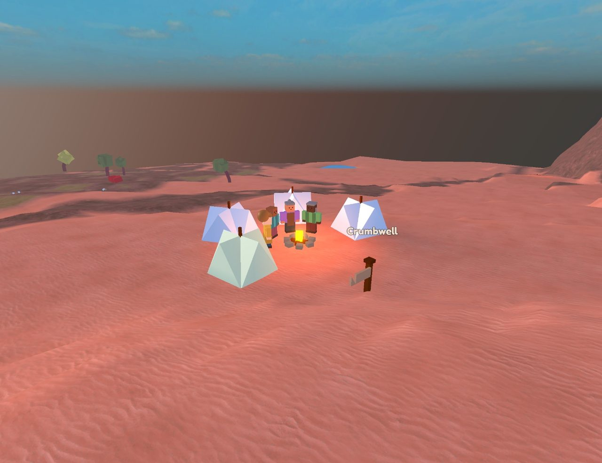
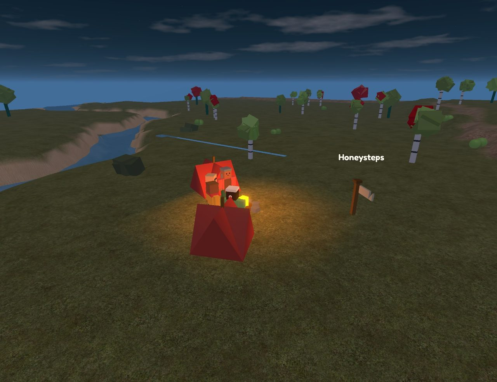

奇比兹年史
钟历0年始于北京时间10月19日06:32；世上一年，合现实3分钟；50年为一纪；现实一天为一个时代。
写于北京时间10月22日23:44。
现在是钟历1783年。49片土地上（其中19片是钟点亮以后才发现的，都在所有地图的边外，访客还走不到），148个镇子、村子和营地里，住着1929个人。已经有82条习俗成了大家都守的规矩。下面每一行都是世界自己发生的。
眼看就要变的事
- 在蓟湖，给作品刻记号这件事离成为规矩最近：已走到约97%。
- 绒湖和折纸原之间那排石头，已经守了367年太平；守满120年、又一直有人敬着，就会成为规矩。
- 风毡草原和高原织城之间那排石头，已经守了716年太平；守满120年、又一直有人敬着，就会成为规矩。
- 雀浮岛和墨枝书城之间那排石头，已经守了311年太平；守满120年、又一直有人敬着，就会成为规矩。
- 海藻深城和灯影水乡之间那排石头，已经守了492年太平；守满120年、又一直有人敬着，就会成为规矩。
- 雨阶井和天气岗从钟历1759年起就为中间那片坡地争个不停，至今未休。
- 盐营和环石丘之间那排石头，已经守了490年太平；守满120年、又一直有人敬着，就会成为规矩。
- 橡口和礁堡峡湾之间那排石头，已经守了523年太平；守满120年、又一直有人敬着，就会成为规矩。
- 哨湾和荆湾之间那排石头，已经守了568年太平；守满120年、又一直有人敬着，就会成为规矩。
- 灯庄和铃井之间那排石头，已经守了280年太平；守满120年、又一直有人敬着，就会成为规矩。
- 铃浮岛和霜浮岛湾之间那排石头，已经守了485年太平；守满120年、又一直有人敬着，就会成为规矩。
- 盐营和萤浮岛之间那排石头，已经守了510年太平；守满120年、又一直有人敬着，就会成为规矩。
- 苇阶坡和蓟井之间那排石头，已经守了591年太平；守满120年、又一直有人敬着，就会成为规矩。
- 扣寨和羽笔窟从钟历1782年起就为中间那片坡地争个不停，至今未休。
- 哨村和灯浮岛之间那排石头，已经守了62年太平；守满120年、又一直有人敬着，就会成为规矩。
- 卵石浮岛台和苔寨之间那排石头，已经守了51年太平；守满120年、又一直有人敬着，就会成为规矩。
- 极光静原亲眼见过第三十四纪的，只剩72岁的小沙了。
- 萤池绿野亲眼见过第三十二纪的，只剩64岁的竹鹊了。
- 折纸原亲眼见过第三十四纪的，只剩64岁的阿桃了。
- 炉边镇亲眼见过第三十一纪的，只剩65岁的阿杏了。
- 高原织城亲眼见过第三十一纪的，只剩67岁的阿柚了。
- 绒铃云洲亲眼见过第三十二纪的，只剩66岁的樱叶了。
- 顶针霜浮岛亲眼见过第三十三纪的，只剩62岁的阿花了。
- 回音霜云台亲眼见过第三十三纪的，只剩63岁的萤萤了。
- 静贝浮岛亲眼见过第三十四纪的，只剩85岁的棉棉了。
- 雨阶井亲眼见过第三十一纪的，只剩73岁的糖饼了。
- 涨水河洲亲眼见过第三十一纪的，只剩59岁的晨晨了。
- 长牙寒原亲眼见过第三十二纪的，只剩58岁的小萤了。
- 天气岗亲眼见过第三十三纪的，只剩45岁的榛柚了。
- 风毡草原亲眼见过第三十一纪的，只剩74岁的阿灯了。
- 现在最年长的是苔浮岛台的棉棉，85岁。
一纪一句话
- 第三十六纪（进行中）：钟历1750–1783年：在天气岗，现在谁做了东西，都会在旁边刻上自己的记号，老记号也总有人去刻深。他们管这叫“久久记着”。
- 第三十五纪：钟历1700–1749年：扬帆蜗牛都接上线了，整群搬进了铃浮岛。第一只走进来，已经是100年前的事了。
- 第三十四纪：钟历1650–1699年：拽线蝶都接上线了，整群搬进了蓟井。第一只走进来，已经是95年前的事了。
- 第三十三纪：钟历1600–1649年：在手套浮岛坡，现在谁做了东西，都会在旁边刻上自己的记号，老记号也总有人去刻深。他们管这叫“落个记号”。
- 第三十二纪：钟历1550–1599年：在卵石浮岛，现在谁做了东西，都会在旁边刻上自己的记号，老记号也总有人去刻深。他们管这叫“记事石”。
- 第三十一纪：钟历1500–1549年：说起广场上那根褪了色的彩杆，礁堡峡湾的人各有各的说法，就分成了两拨。
- 第三十纪：钟历1450–1499年：哼歌野马都接上线了，整群搬进了麻雀洼。第一只走进来，已经是171年前的事了。
- 第二十九纪：钟历1400–1449年：说起雾村那些空房子是谁盖的，灯庄的人各有各的说法，就分成了两拨。
- 第二十八纪：钟历1350–1399年：在沙浮岛坪，现在谁做了东西，都会在旁边刻上自己的记号，老记号也总有人去刻深。他们管这叫“久久记着”。
- 第二十七纪：钟历1300–1349年：卵石浮岛和苇浮岛之间那排石头，已经让两边和和气气过了215年。现在谁也不跟石头争：他们管这叫“听石头的”。
- 第二十六纪：钟历1250–1299年：苜蓿浮岛为了多年的积怨分成了两拨。
- 第二十五纪：钟历1200–1249年：起头的禾晴早就不在了，可在灯影水乡的广场上，大家欢呼之后还是会摇一摇。他们管这叫“广场摇摆”。
- 第二十四纪：钟历1150–1199年：萤窝和拱渠城之间那排石头，已经让两边和和气气过了188年。现在谁也不跟石头争：他们管这叫“不吵石”。
- 第二十三纪：钟历1100–1149年：现在灯影水乡的广场上，大家欢呼之后都会摇一摇。
- 第二十二纪：钟历1050–1099年：在霜浮岛，现在谁做了东西，都会在旁边刻上自己的记号，老记号也总有人去刻深。他们管这叫“守记号”。
- 第二十一纪：钟历1000–1049年：纺纺顺着芦苇长梯爬下去，在地底发现了顶针铃根下。
- 第二十纪：钟历950–999年：阿麦从巨人后院来到蓟湖，带来了31年里的新鲜事；可在蓟湖，才过了9年。
- 第十九纪：钟历900–949年：高原织城的吃食不够这么多种动物分，那里最后的垒石岩羊再也没出现过。
- 第十八纪：钟历850–899年：小暮走过了最后一片土地，又一直往前走，结果从另一头走回了拱渠城。原来世界是圆的。
- 第十七纪：钟历800–849年：在哨湾，现在谁做了东西，都会在旁边刻上自己的记号，老记号也总有人去刻深。他们管这叫“落个记号”。
- 第十六纪：钟历750–799年：在红树迷湾，现在谁做了东西，都会在旁边刻上自己的记号，老记号也总有人去刻深。他们管这叫“落个记号”。
- 第十五纪：钟历700–749年：在柳口，现在谁做了东西，都会在旁边刻上自己的记号，老记号也总有人去刻深。他们管这叫“石头说话”。
- 第十四纪：钟历650–699年：世上最后一只叠衣小马，再也没出现过。
- 第十三纪：钟历600–649年：铃浮岛成了一座镇子。
- 第十二纪：钟历550–599年：在盐阶，现在谁做了东西，都会在旁边刻上自己的记号，老记号也总有人去刻深。他们管这叫“记事石”。
- 第十一纪：钟历500–549年：在巨人后院，现在谁做了东西，都会在旁边刻上自己的记号，老记号也总有人去刻深。他们管这叫“落个记号”。
- 第十纪：钟历450–499年：划桨螃蟹都接上线了，整群搬进了礁堡峡湾。第一只走进来，已经是55年前的事了。
- 第九纪：钟历400–449年：说起张嘴石到底是谁弄出来的，鸣石谷的人各有各的说法，就分成了两拨。
- 第八纪：钟历350–399年：灯影水乡和萤池绿野已经没人记得萤菇坡地上那排石头是干什么的了，两边又争了起来。
- 第七纪：钟历300–349年：秋燕乘着芦苇风筝飞上去，在云里发现了绒苔云洲。
- 第六纪：钟历250–299年：萤阶剩下的几户人家收拾好东西，搬去绿琉璃城过日子了。萤阶空了下来。
- 第五纪：钟历200–249年：羽笔坳最后一户也搬走了，羽笔坳空了。
- 第四纪：钟历150–199年：汤泉坡已经没人记得0年到49年的事了。那些故事，没能传下来。
- 第三纪：钟历100–149年：杏杏走过了所有地图的尽头，发现了纸苔滩。
- 第二纪：钟历50–99年：炉边镇闹饥荒那年，巨人后院送去了一筐筐灯蕨。
- 第一纪：钟历0–49年：海藻深城为了该轮到谁敲钟分成了两拨。
- 钟前：世界先有了模样，后有了时间：先是炉边镇，再是周围的一片片土地，然后来了第一批访客，最后才有了自己的钟。
第五时代 · 10月22日
第三十六纪 · 钟历1750–1783年（进行中）
北京时间10月22日22:02–23:44 · 共736件事 · 全部记录
钟历1750–1783年：在天气岗，现在谁做了东西，都会在旁边刻上自己的记号，老记号也总有人去刻深。他们管这叫“久久记着”。
- 钟历1750年：岚岚乘着汽浮囊飞上去，在云里发现了亮水云洲。
怎么来的（钟历1732年）：铃井的果岚又琢磨出了汽浮囊，世上早就没人记得它了。 - 钟历1750年：亮水云洲有条怪规矩：掉下的东西，夜里会慢慢浮起来。
怎么来的（钟历1750年）：岚岚乘着汽浮囊飞上去，在云里发现了亮水云洲。 - 钟历1752年：在天气岗，现在谁做了东西，都会在旁边刻上自己的记号，老记号也总有人去刻深。他们管这叫“久久记着”。
怎么来的（钟历1736年）：雪松擦掉天气岗那座老桥旁边石头上的青苔，认出了一个快磨平的记号：是阿果架的。 - 钟历1757年：萤浮岛为了还要不要过远客节分成了两拨。
怎么来的（钟历1622年）：萤浮岛办了第一届远客节。 - 钟历1760年：说起绒营坪那些空房子是谁盖的，石柱台地的人各有各的说法，就分成了两拨。
怎么来的（钟历1740年）：关于绒营坪那些空房子是谁盖的，石柱台地的人又说不到一块儿去了。
他们不知道的是：绒营坪在钟开始走以前就有了；最后一户在钟历1511年搬走了。
- 钟历1760年：卵石渡湾的人认定了：极光结到底是谁弄出来的？那是极光静原的堆柴草篮弄的。
怎么来的（钟历1743年）：卵石渡湾的人开始琢磨极光结到底是谁弄出来的。
他们不知道的是：在钟开始走以前，它就在那儿了。 - 钟历1762年：试绳蜥蜴都接上线了，整群搬进了灯湾。第一只走进来，已经是174年前的事了。
怎么来的（钟历1588年）：有一只试绳蜥蜴走进灯湾，在火边待了下来。 - 钟历1763年：阿绒搬进了空荡荡的饼屑浮岛湾，生起了好多年来的第一炉火。
怎么来的（钟历1763年）：哨浮岛坡为了人太多、地方太挤分成了两拨。 - 钟历1771年：回音霜云台的小梳毛小羊变了好多，大家给它们起了新名字：瞌睡小梳毛小羊。
怎么来的（钟历1639年）：小梳毛小羊都接上线了，整群搬进了萤浮岛。第一只走进来，已经是171年前的事了。 - 钟历1774年：起头的晴荷早就不在了，可在灯影水乡的节日上，大家蹦跳之后还是会把手举得高高的。他们管这叫“节日举手”。
怎么来的（钟历1714年）：现在灯影水乡的节日上，大家蹦跳之后都会把手举得高高的。 - 钟历1775年：莓莓带着4个人离开雀浮岛，建起了苔浮岛台。
怎么来的（钟历1447年）：小豆和沙沙一起，盖好了雀浮岛的小豆家。 - 钟历1780年：小浪垒好了雀浮岛坪的观星台。
怎么来的（钟历1777年）：小浪灵机一动，在雀浮岛坪垒起了观星台，可那儿谁也没说过要。 - 钟历1780年：石柱台地的荷荷又琢磨出了墨字，世上早就没人记得它了。
怎么来的（钟历1480年）：世上再也没人记得墨字怎么做了。 - 钟历1782年：盐浮岛台最后一户也搬走了，盐浮岛台空了。
第三十五纪 · 钟历1700–1749年
北京时间10月22日19:32–22:02 · 共1048件事 · 全部记录
钟历1700–1749年：扬帆蜗牛都接上线了，整群搬进了铃浮岛。第一只走进来，已经是100年前的事了。
- 钟历1700年：草稿原的人认定了：那座谁也不记得是谁盖的老瞭望塔？那是比谁的爷爷奶奶都老的东西。
怎么来的（钟历1700年）：草稿原的人开始琢磨那座谁也不记得是谁盖的老瞭望塔。
他们不知道的是：那是岚糖在钟历610年盖的。 - 钟历1701年：草稿原的人现在知道那座老瞭望塔是谁盖的了：岚糖。不过比谁的爷爷奶奶都老的东西的故事，大家还是爱讲着玩。
怎么来的（钟历1701年）：鼓灯擦掉草稿原那座老瞭望塔旁边石头上的青苔，认出了一个快磨平的记号：是岚糖盖的。 - 钟历1702年：扬帆蜗牛都接上线了，整群搬进了铃浮岛。第一只走进来，已经是100年前的事了。
怎么来的（钟历1602年）：有一只扬帆蜗牛走进铃浮岛，在火边待了下来。 - 钟历1708年：蜜寨为了还要不要过奇事节分成了两拨。
怎么来的（钟历1549年）：蜜寨办了第一届奇事节。
- 钟历1711年：静贝浮岛的筛米泥砖变了好多，大家给它们起了新名字：夜筛米泥砖。
怎么来的（钟历1569年）：筛米泥砖从墨枝书城来到了静贝浮岛。 - 钟历1715年：说起那座谁也不记得是谁修的老码头，雾渡的人各有各的说法，就分成了两拨。
怎么来的（钟历1692年）：关于那座谁也不记得是谁修的老码头，雾渡的人又说不到一块儿去了。
他们不知道的是：那是月月在钟历1440年修的。 - 钟历1718年：小鹊和小蝉、梅鼓一起，搭好了风毡草原的东风筝塔。
怎么来的（钟历1633年）：卵石渡湾的桃杏又琢磨出了羽毛风筝，世上早就没人记得它了。 - 钟历1720年：苇阶湾的梅芽又琢磨出了海藻浮囊，世上早就没人记得它了。
怎么来的（钟历1712年）：世上再也没人记得海藻浮囊怎么做了。 - 钟历1720年：捕风绿洲办了第一届远客节。
怎么来的（钟历1720年）：捕风绿洲的人认定了：从石柱台地来的那种怪点灯鱿鱼？那是从谁的梦里走出来的东西。 - 钟历1721年：春芽带着5个人离开哨浮岛坡，建起了饼屑浮岛湾。
- 钟历1734年：起头的萤萤早就不在了，可在玫瑰峡城的地标前，大家指方向之后还是会晃一晃。他们管这叫“地标晃悠”。
怎么来的（钟历1676年）：现在玫瑰峡城的地标前，大家指方向之后都会晃一晃。 - 钟历1735年：小麦搬进了空荡荡的蜜浮岛湾，生起了好多年来的第一炉火。
怎么来的（钟历1232年）：月菇和阿蛙一起，盖好了灯浮岛的月菇家。 - 钟历1735年：蜜浮岛湾最后一户也搬走了，蜜浮岛湾空了。
怎么来的（钟历1705年）：嗡铃离开蜜浮岛湾，去了炭营。 - 钟历1745年：蓟庄为了人太多、地方太挤分成了两拨。
怎么来的（钟历1742年）：茶渠离开哨湖，去了手套坳。 - 钟历1746年：阿夏搭好了蜜阶的风筝塔。
怎么来的（钟历1675年）：萤池绿野的橙燕发明了午睡乌龟风筝。
第三十四纪 · 钟历1650–1699年
北京时间10月22日17:02–19:32 · 共1013件事 · 全部记录
钟历1650–1699年：拽线蝶都接上线了，整群搬进了蓟井。第一只走进来，已经是95年前的事了。
- 钟历1650年：羽笔浮岛坪的竹桃又琢磨出了深石井，世上早就没人记得它了。
怎么来的（钟历1600年）：世上再也没人记得深石井怎么做了。 - 钟历1650年：苔浮岛台办了第一届想念节。
怎么来的（钟历1650年）：苔浮岛台的人认定了：好多年没见过的浇茶鼠兔？那是比谁的爷爷奶奶都老的东西。 - 钟历1656年：莓莓带着4个人离开手套坳，建起了蓟庄。
- 钟历1663年：绒铃云洲的转圈鸽子变了好多，大家给它们起了新名字：长毛转圈鸽子。
怎么来的（钟历1652年）：转圈鸽子受不了苗鼓砖，从雾浮岛跑掉了。 - 钟历1664年：苇渡坪为了多年的积怨分成了两拨。
怎么来的（钟历1645年）：阿云带着5个人离开汤泉坡，建起了苇渡坪。
- 钟历1667年：起头的小榛早就不在了，可在草稿原的地标前，大家指方向之后还是会把手举得高高的。他们管这叫“地标举手”。
怎么来的（钟历1667年）：现在草稿原的地标前，大家指方向之后都会把手举得高高的。 - 钟历1670年：饼屑坡台的人认定了：蓟洼那些空房子是谁盖的？那是这儿谁都还没出生的时候，云阶茶山的人弄的。
怎么来的（钟历1651年）：饼屑坡台的人开始琢磨蓟洼那些空房子是谁盖的。
他们不知道的是：蓟洼在钟开始走以前就有了；最后一户在钟历779年搬走了。 - 钟历1672年：洼渡的阿云手里捧着一杯热茶，过完了满满的一辈子，那年82岁。
- 钟历1673年：拽线蝶都接上线了，整群搬进了蓟井。第一只走进来，已经是95年前的事了。
怎么来的（钟历1578年）：有一只拽线蝶走进蓟井，在火边待了下来。 - 钟历1680年：极光静原把那片萤菇坡地让给了卵石渡湾，自己去更远的地方找。
怎么来的（钟历1674年）：卵石渡湾和极光静原都说，中间那片长着萤菇的坡地是自己的。 - 钟历1684年：阿樱盖好了霜浮岛的福气书屋。
怎么来的（钟历1496年）：捕风绿洲的小栗发明了柳苇谣。 - 钟历1686年：雨团和阿橙一起，雕好了绒湖的岚岚的雕像。
怎么来的（钟历1612年）：极光静原的糖沙又琢磨出了陶土字，世上早就没人记得它了。 - 钟历1696年：橡阶最后一户也搬走了，橡阶空了。
- 钟历1698年：礁堡峡湾的人现在知道那座老瞭望塔是谁盖的了：松果。不过大地在说梦话的故事，大家还是爱讲着玩。
怎么来的（钟历1698年）：萤萤擦掉礁堡峡湾那座老瞭望塔旁边石头上的青苔，认出了一个快磨平的记号：是松果盖的。
第三十三纪 · 钟历1600–1649年
北京时间10月22日14:32–17:02 · 共1066件事 · 全部记录
钟历1600–1649年：在手套浮岛坡，现在谁做了东西，都会在旁边刻上自己的记号，老记号也总有人去刻深。他们管这叫“落个记号”。
- 钟历1603年：小豆带着4个人离开哨村，建起了梅村。
怎么来的（钟历1603年）：哨村把那片萤菇坡地让给了萤池绿野，自己去更远的地方找。 - 钟历1604年：苜蓿浮岛坡成了一座镇子。
怎么来的（钟历1603年）：团笛盖好了苜蓿浮岛坡的团笛家。 - 钟历1607年：栗毛和星星一起，雕好了沙阶的小菇的雕像。
怎么来的（钟历1531年）：巨人后院的阿糕又琢磨出了纸字，世上早就没人记得它了。 - 钟历1610年：灯影水乡的阿绒又琢磨出了羊毛索桥，世上早就没人记得它了。
怎么来的（钟历1267年）：世上再也没人记得羊毛索桥怎么做了。 - 钟历1610年：荆口办了第一届书屋节。
怎么来的（钟历1610年）：阿鼓和小浪、小雪、阿禾一起，盖好了荆口的书屋。 - 钟历1613年：在手套浮岛坡，现在谁做了东西，都会在旁边刻上自己的记号，老记号也总有人去刻深。他们管这叫“落个记号”。
怎么来的（钟历1613年）：阿荷把铃粟刻在书屋旁边的记号又刻深了些。两人从没见过面，是石头记着。 - 钟历1620年：说起为什么发出的每一声，都会在第二天传回来，灯浮岛的人各有各的说法，就分成了两拨。
怎么来的（钟历1589年）：关于为什么发出的每一声，都会在第二天传回来，灯浮岛的人又说不到一块儿去了。
他们不知道的是：在钟开始走以前，就是这样了。 - 钟历1621年：绒苔云洲的泡脚蜥蜴变了好多，大家给它们起了新名字：夜泡脚蜥蜴。
怎么来的（钟历1621年）：躲了71年，绒苔云洲的泡脚蜥蜴又出来了。 - 钟历1626年：盐浮岛台的阿米在一个下雪的傍晚走完了一辈子，暖和又满足，那年70岁。
- 钟历1631年：穿桥小狗都接上线了，整群搬进了沙湖。第一只走进来，已经是52年前的事了。
怎么来的（钟历1579年）：有一只穿桥小狗走进沙湖，在火边待了下来。 - 钟历1636年：壶窟把饥荒年欠苇湖的那些筐，还上了。
怎么来的（钟历1595年）：壶窟闹饥荒那年，苇湖送去了一筐筐萤菇。 - 钟历1639年：小鹭雕好了萤营的阿羽的雕像。
怎么来的（钟历1425年）：萤池绿野的春笛发明了哨蓟谣。 - 钟历1641年：卵石浮岛台的人认定了：漂浮岛那些空房子是谁盖的？那是从谁的梦里走出来的东西。
怎么来的（钟历1622年）：卵石浮岛台的人开始琢磨漂浮岛那些空房子是谁盖的。
他们不知道的是：漂浮岛在钟开始走以前就有了；最后一户在钟历1543年搬走了。 - 钟历1644年：起头的米米早就不在了，可在汤泉坡的地标前，大家指方向之后还是会拍拍手。他们管这叫“地标拍手”。
怎么来的（钟历1644年）：现在汤泉坡的地标前，大家指方向之后都会拍拍手。 - 钟历1646年：在草稿原，现在谁做了东西，都会在旁边刻上自己的记号，老记号也总有人去刻深。他们管这叫“说给石头听”。
怎么来的（钟历1616年）：松鼓擦掉草稿原那座老瞭望塔旁边石头上的青苔，认出了一个快磨平的记号：是岚糖盖的。
第三十二纪 · 钟历1550–1599年
北京时间10月22日12:02–14:32 · 共1123件事 · 全部记录
钟历1550–1599年：在卵石浮岛，现在谁做了东西，都会在旁边刻上自己的记号，老记号也总有人去刻深。他们管这叫“记事石”。
- 钟历1552年：起头的阿松早就不在了，可在猴面包树原的地标前，大家指方向之后还是会拍拍手。他们管这叫“地标拍手”。
怎么来的（钟历1526年）：现在猴面包树原的地标前，大家指方向之后都会拍拍手。 - 钟历1553年：云窟的晴樱又琢磨出了深陶土井，世上早就没人记得它了。
怎么来的（钟历1475年）：世上再也没人记得深陶土井怎么做了。 - 钟历1554年：静阶的人现在知道那座老桥是谁架的了：阿绒。不过墨枝书城的放哨小象弄的的故事，大家还是爱讲着玩。
怎么来的（钟历1554年）：梅秋擦掉静阶那座老桥旁边石头上的青苔，认出了一个快磨平的记号：是阿绒架的。 - 钟历1560年：失物海岸和沙浮岛之间那排石头，已经让两边和和气气过了279年。现在谁也不跟石头争：他们管这叫“听石头的”。
怎么来的（钟历1560年）：萤菇坡地又挤起来了，失物海岸和沙浮岛没吵，指了指那排老石头，事儿就过去了。 - 钟历1560年：草稿原的人认定了：广场上那根褪了色的彩杆？那是很久以前苗苗弄的。
怎么来的（钟历1506年）：草稿原的人开始琢磨广场上那根褪了色的彩杆。
他们不知道的是：那是为彩杆节立的；这个节，这里从钟历1258年一直过到1411年。 - 钟历1565年：小羽带着2个人离开哨村，建起了盐营坡。
怎么来的（钟历1088年）：笛云和麦橙一起，盖好了哨村的笛云家。 - 钟历1571年：阿茶和小桃、阿莓一起，盖好了饼屑坡台的钟楼。
怎么来的（钟历1473年）：羽笔阶台的阿荷又琢磨出了芦苇稻草人，世上早就没人记得它了。 - 钟历1576年：说起画了一半的风车到底是谁弄出来的，草稿原的人各有各的说法，就分成了两拨。
怎么来的（钟历1569年）：关于画了一半的风车到底是谁弄出来的，草稿原的人又说不到一块儿去了。
他们不知道的是：在钟开始走以前，它就在那儿了。 - 钟历1578年：在卵石浮岛，现在谁做了东西，都会在旁边刻上自己的记号，老记号也总有人去刻深。他们管这叫“记事石”。
怎么来的（钟历1578年）：小糕把小燕刻在小燕家旁边的记号又刻深了些。两人从没见过面，是石头记着。 - 钟历1580年：梅浮岛坡为了多年的积怨分成了两拨。
怎么来的（钟历1579年）：梅浮岛坡的人都说，阿风像只小刺猬，不太好接近。 - 钟历1581年：说起萤湾那些空房子是谁盖的，漂渡的人各有各的说法，就分成了两拨。
怎么来的（钟历1578年）：关于萤湾那些空房子是谁盖的，漂渡的人又说不到一块儿去了。
他们不知道的是：萤湾在钟开始走以前就有了；最后一户在钟历1145年搬走了。
- 钟历1589年：栗灯乘着雀蝉线飞上去，在云里发现了琥珀根云台。
- 钟历1589年：琥珀根云台有条怪规矩：这里的石头每年都长大一点。
怎么来的（钟历1589年）：栗灯乘着雀蝉线飞上去，在云里发现了琥珀根云台。 - 钟历1593年：阿苗顺着深陶土井爬下去，在地底发现了空线地窟。
怎么来的（钟历1553年）：云窟的晴樱又琢磨出了深陶土井，世上早就没人记得它了。 - 钟历1594年：小沙雕好了盐坡的米笛的雕像。
第三十一纪 · 钟历1500–1549年
北京时间10月22日09:32–12:02 · 共1027件事 · 全部记录
钟历1500–1549年：说起广场上那根褪了色的彩杆，礁堡峡湾的人各有各的说法，就分成了两拨。
- 钟历1501年：说起广场上那根褪了色的彩杆，礁堡峡湾的人各有各的说法，就分成了两拨。
怎么来的（钟历1477年）：关于广场上那根褪了色的彩杆，礁堡峡湾的人又说不到一块儿去了。
他们不知道的是：那是为老石头节立的；这个节，这里从钟历990年一直过到1047年。 - 钟历1501年：阿雪带着6个人离开礁堡峡湾，建起了梅寨。
怎么来的（钟历1501年）：说起广场上那根褪了色的彩杆，礁堡峡湾的人各有各的说法，就分成了两拨。 - 钟历1504年：霜村的夏雨坐在水边数着船帆，走完了长长的一生，那年73岁。
- 钟历1511年：长牙寒原的小麦又琢磨出了琉璃铃，世上早就没人记得它了。
怎么来的（钟历1479年）：世上再也没人记得琉璃铃怎么做了。 - 钟历1512年：绒浮岛台最后一户也搬走了，绒浮岛台空了。
- 钟历1513年：小饼一直想被人记住，真的做到了。
- 钟历1521年：梅寨的人认定了：量了两遍的船到底是谁弄出来的？那是很久以前阿橙弄的。
怎么来的（钟历1514年）：梅寨的人开始琢磨量了两遍的船到底是谁弄出来的。
他们不知道的是：在钟开始走以前，它就在那儿了。 - 钟历1525年：起头的蝉麦早就不在了，可在绿琉璃城的节日上，大家蹦跳之后还是会鞠个躬。他们管这叫“节日鞠躬”。
怎么来的（钟历1478年）：现在绿琉璃城的节日上，大家蹦跳之后都会鞠个躬。 - 钟历1528年：萤浮岛一带的山扑扇纸片躲起来了：那里的琉璃铃，它们实在受不了。
怎么来的（钟历969年）：霜庄的小蛙又琢磨出了琉璃铃，世上早就没人记得它了。 - 钟历1532年：毛雀和石石、阿蛙一起，盖好了雾渡的书屋。
怎么来的（钟历1531年）：毛雀灵机一动，在雾渡盖起了书屋，可那儿谁也没说过要。 - 钟历1535年：小沙垒好了霜浮岛台的观星台。
- 钟历1537年：现在雨阶井的广场上，大家欢呼之后都会鞠个躬。
怎么来的（钟历1531年）：在雨阶井的广场上，阿沙为了纪念倒下的东西，从此欢呼之后总要再鞠个躬。 - 钟历1540年：手套浮岛坡办了第一届书屋节。
怎么来的（钟历1540年）：铃粟和沙禾、阿云一起，盖好了手套浮岛坡的书屋。 - 钟历1549年：绒铃云洲的夜装篓回音变了好多，大家给它们起了新名字：海边夜装篓回音。
怎么来的（钟历1327年）：夜装篓回音从雨阶井来到了绒铃云洲。
第四时代 · 10月21日
第三十纪 · 钟历1450–1499年
北京时间10月22日07:02–09:32 · 共1039件事 · 全部记录
钟历1450–1499年：哼歌野马都接上线了，整群搬进了麻雀洼。第一只走进来，已经是171年前的事了。
- 钟历1450年：红树迷湾的人现在知道那间老书屋是谁盖的了：暮岩。不过很久以前暮岩弄的的故事，大家还是爱讲着玩。
怎么来的（钟历1450年）：沙米擦掉红树迷湾那间老书屋旁边石头上的青苔，认出了一个快磨平的记号：是暮岩盖的。 - 钟历1450年：壶湾的人认定了：广场上那根褪了色的彩杆？那是一个早就没人过的节。
怎么来的（钟历1450年）：壶湾的人开始琢磨广场上那根褪了色的彩杆。
他们猜对了：那是为老房子节立的；这个节，这里从钟历976年一直过到1373年。 - 钟历1457年：石柱台地为了多年的积怨分成了两拨。
怎么来的（钟历1439年）：石柱台地的人都说，笛莓像只小刺猬，不太好接近。 - 钟历1461年：小茶带着5个人离开灯浮岛湾，建起了蜜浮岛台。
怎么来的（钟历1460年）：羽岩离开哨村，去了灯浮岛。 - 钟历1463年：星蝉和麦麦、绒果、阿糕一起，盖好了苇阶坡的书屋。
怎么来的（钟历974年）：萤浮岛的棉棉发明了调音风铃谣。 - 钟历1467年：起头的鹊晴早就不在了，可在风毡草原的门口，大家挥手之后还是会鞠个躬。他们管这叫“门口鞠躬”。
怎么来的（钟历1447年）：现在风毡草原的门口，大家挥手之后都会鞠个躬。 - 钟历1470年：饼屑渡办了第一届钟楼节。
怎么来的（钟历1470年）：阿团和阿羽、星栗一起，盖好了饼屑渡的钟楼。 - 钟历1471年：梅营坪的豆蛙又琢磨出了水地图，世上早就没人记得它了。
怎么来的（钟历1464年）：世上再也没人记得水地图怎么做了。 - 钟历1474年：哼歌野马都接上线了，整群搬进了麻雀洼。第一只走进来，已经是171年前的事了。
怎么来的（钟历1303年）：有一只哼歌野马走进麻雀洼，在火边待了下来。 - 钟历1480年：小苗搬进了空荡荡的霜浮岛台，生起了好多年来的第一炉火。
怎么来的（钟历1480年）：说起为什么种下的东西，长得快一倍，谢得也快一倍，萤浮岛的人各有各的说法，就分成了两拨。 - 钟历1482年：长牙寒原的云棉在一个下雪的傍晚走完了一辈子，暖和又满足，那年73岁。
- 钟历1483年：绒铃云洲的敲阶旋风变了好多，大家给它们起了新名字：花纹敲阶旋风。
怎么来的（钟历1483年）：敲阶旋风受不了星萤哨，从雾浮岛跑掉了。 - 钟历1490年：说起从风毡草原来的那种怪钉桩纺锤，长牙寒原的人各有各的说法，就分成了两拨。
怎么来的（钟历1489年）：关于从风毡草原来的那种怪钉桩纺锤，长牙寒原的人又说不到一块儿去了。 - 钟历1491年：棉糕搭好了饼屑渡的风筝塔。
怎么来的（钟历964年）：月蛾草甸的珠蛾又琢磨出了汽浮囊，世上早就没人记得它了。 - 钟历1494年：灯湾为了还要不要过远客节分成了两拨。

第二十九纪 · 钟历1400–1449年
北京时间10月22日04:32–07:02 · 共1025件事 · 全部记录
钟历1400–1449年：说起雾村那些空房子是谁盖的，灯庄的人各有各的说法，就分成了两拨。
- 钟历1400年：说起雾村那些空房子是谁盖的，灯庄的人各有各的说法，就分成了两拨。
怎么来的（钟历1391年）：灯庄的人开始琢磨雾村那些空房子是谁盖的。
他们不知道的是：雾村在钟开始走以前就有了；最后一户在钟历1116年搬走了。 - 钟历1400年：阿橙带着7个人离开灯庄，建起了雾渡。
怎么来的（钟历1400年）：说起雾村那些空房子是谁盖的，灯庄的人各有各的说法，就分成了两拨。 - 钟历1402年：涨水河洲再没人提水莓从前那些闲话了：这些年，水莓帮了好多邻居。
怎么来的（钟历1377年）：糕糕和水莓一起，架好了涨水河洲的蓝桥。 - 钟历1410年：云阶茶山的花花又琢磨出了线稻草人，世上早就没人记得它了。
怎么来的（钟历1395年）：世上再也没人记得线稻草人怎么做了。 - 钟历1414年：起头的贝贝早就不在了，可在红树迷湾的地标前，大家指方向之后还是会把手举得高高的。他们管这叫“地标举手”。
怎么来的（钟历1359年）：现在红树迷湾的地标前，大家指方向之后都会把手举得高高的。 - 钟历1418年：饼屑渡的小鼓在高高的草丛边，过完了长长的一生，那年74岁。
- 钟历1420年：盐营的人认定了：好多年没见过的织布背篓？那是这儿谁都还没出生的时候，霜庄的人弄的。
怎么来的（钟历1362年）：盐营的人开始琢磨好多年没见过的织布背篓。
他们不知道的是：盐营附近最后一次有人见到它们，是钟历1329年。 - 钟历1427年：蕨窝的人现在知道那座老瞭望塔是谁盖的了：小燕。不过大地在说梦话的故事，大家还是爱讲着玩。
怎么来的（钟历1427年）：桃叶擦掉蕨窝那座老瞭望塔旁边石头上的青苔，认出了一个快磨平的记号：是小燕盖的。 - 钟历1428年：躲了72年，雨阶井的顶罐山羊又出来了。
怎么来的（钟历1356年）：雨阶井一带的顶罐山羊躲起来了：那里的线稻草人，它们实在受不了。 - 钟历1430年：柚风把云蓟和洼蓟合在一起，做出了一样新东西：萤沙绒球。它留住了洼蓟的水汽，所以能在地上干巴巴的时候自己滚到有水的地方。它还能让大热天里的水一直凉苗苗的。
怎么来的（钟历1429年）：炉边镇的柚风把云蓟和洼蓟混在一起，想看看能做出什么。它有什么用，现在还没人知道。 - 钟历1432年：顶针霜浮岛的扬帆蜗牛变了好多，大家给它们起了新名字：山扬帆蜗牛。
怎么来的（钟历1150年）：扬帆蜗牛从涨水河洲来到了顶针霜浮岛。 - 钟历1436年：柚米和鹭芽一起，垒好了云阶茶山的长观星台。
- 钟历1441年：巨人后院办了第一届老房子节。
怎么来的（钟历1441年）：巨人后院的人认定了：盐口那些空房子是谁盖的？那是星星在练习。 - 钟历1448年：晨春盖好了雀浮岛的钟楼。
怎么来的（钟历969年）：霜庄的小蛙又琢磨出了琉璃铃，世上早就没人记得它了。
第二十八纪 · 钟历1350–1399年
北京时间10月22日02:02–04:32 · 共960件事 · 全部记录
钟历1350–1399年：在沙浮岛坪，现在谁做了东西，都会在旁边刻上自己的记号，老记号也总有人去刻深。他们管这叫“久久记着”。
- 钟历1352年：苔阶的人现在知道那间老作坊是谁搭的了：云晴。不过睡了很久很久的老一辈的故事，大家还是爱讲着玩。
怎么来的（钟历1352年）：蕾叶擦掉苔阶那间老作坊旁边石头上的青苔，认出了一个快磨平的记号：是云晴搭的。 - 钟历1356年：石柱台地和拱渠城之间那排石头，已经让两边和和气气过了135年。现在谁也不跟石头争：他们管这叫“石头线”。
怎么来的（钟历1338年）：雾小梅地又挤起来了，石柱台地和拱渠城没吵，指了指那排老石头，事儿就过去了。 - 钟历1358年：阿绒盖好了绿琉璃城的新书屋。
怎么来的（钟历1248年）：沙浮岛坡的云云又琢磨出了炭苜蓿谣，世上早就没人记得它了。 - 钟历1360年：灯浮岛湾的阿莓又琢磨出了线索桥，世上早就没人记得它了。
怎么来的（钟历1312年）：世上再也没人记得线索桥怎么做了。 - 钟历1361年：说起从猴面包树原来的那种怪夜量步松鸦，拱渠城的人各有各的说法，就分成了两拨。
怎么来的（钟历1346年）：关于从猴面包树原来的那种怪夜量步松鸦，拱渠城的人又说不到一块儿去了。 - 钟历1366年：起头的绒晴早就不在了，可在月蛾草甸的地标前，大家指方向之后还是会摇一摇。他们管这叫“地标摇摆”。
怎么来的（钟历1306年）：现在月蛾草甸的地标前，大家指方向之后都会摇一摇。 - 钟历1367年：橡口为了人太多、地方太挤分成了两拨。
怎么来的（钟历1366年）：小燕离开草稿原，去了柳坳。
- 钟历1370年：灯浮岛的人认定了：好多年没见过的挥手麻雀？那是这儿谁都还没出生的时候，炭营的人弄的。
怎么来的（钟历1363年）：灯浮岛的人开始琢磨好多年没见过的挥手麻雀。
他们不知道的是：灯浮岛附近最后一次有人见到它们，是钟历1344年。 - 钟历1376年：冬沙搬进了空荡荡的壶湾，生起了好多年来的第一炉火。
怎么来的（钟历1376年）：玫瑰峡城为了还要不要过老房子节分成了两拨。 - 钟历1376年：玫瑰峡城为了还要不要过老房子节分成了两拨。
怎么来的（钟历1266年）：玫瑰峡城办了第一届老房子节。 - 钟历1382年：米米乘着纸浮囊飞上去，在云里发现了绒嗡云台。
怎么来的（钟历1303年）：荆湾的栗栗又琢磨出了纸浮囊，世上早就没人记得它了。 - 钟历1382年：绒嗡云台有条怪规矩：这里永远是下雨前的那一个钟头。
怎么来的（钟历1382年）：米米乘着纸浮囊飞上去，在云里发现了绒嗡云台。 - 钟历1384年：在沙浮岛坪，现在谁做了东西，都会在旁边刻上自己的记号，老记号也总有人去刻深。他们管这叫“久久记着”。
怎么来的（钟历1352年）：米豆把小星刻在书屋旁边的记号又刻深了些。两人从没见过面，是石头记着。 - 钟历1394年：花铃带着5个人离开雀浮岛，建起了麻雀浮岛坡。
怎么来的（钟历1394年）：雀浮岛为了人太多、地方太挤分成了两拨。 - 钟历1399年：静浮岛最后一户也搬走了，静浮岛空了。
第二十七纪 · 钟历1300–1349年
北京时间10月21日23:32–10月22日02:02 · 共967件事 · 全部记录
钟历1300–1349年：卵石浮岛和苇浮岛之间那排石头，已经让两边和和气气过了215年。现在谁也不跟石头争：他们管这叫“听石头的”。
- 钟历1305年：晨燕和灯糕一起，垒好了羽笔浮岛的西观星台。
- 钟历1306年：绒浮岛最后一户也搬走了，绒浮岛空了。
怎么来的（钟历1306年）：阿榛带着9个人离开绒浮岛，建起了柳浮岛。 - 钟历1307年：浪绒搬进了空荡荡的绒浮岛，生起了好多年来的第一炉火。
怎么来的（钟历1306年）：绒浮岛最后一户也搬走了，绒浮岛空了。 - 钟历1310年：茶杯浮岛办了第一届彩杆节。
怎么来的（钟历1310年）：茶杯浮岛的人认定了：广场上那根褪了色的彩杆？那是一个早就没人过的节。 - 钟历1315年：起头的小鹭早就不在了，可在环石丘的广场上，大家欢呼之后还是会鞠个躬。他们管这叫“广场鞠躬”。
怎么来的（钟历1292年）：现在环石丘的广场上，大家欢呼之后都会鞠个躬。 - 钟历1319年：绒浮岛为了多年的积怨分成了两拨。
怎么来的（钟历1317年）：绒浮岛的人都说，小鹭像只小刺猬，不太好接近。 - 钟历1320年：绒莓带着5个人离开绒营坪，建起了苔寨。
怎么来的（钟历1319年）：小月离开卵石浮岛台，去了石柱台地。
- 钟历1323年：顶针铃根下的装船波光变了好多，大家给它们起了新名字：瞌睡装船波光。
怎么来的（钟历1217年）：装船波光从石柱台地来到了顶针铃根下。 - 钟历1324年：阿蕾垒好了绒湖的观星台。
怎么来的（钟历1303年）：霜洼剩下的几户人家收拾好东西，搬去绒湖过日子了。霜洼空了下来。 - 钟历1330年：漂浮岛的羽莓又琢磨出了苔藓茶汤，世上早就没人记得它了。
怎么来的（钟历1076年）：世上再也没人记得苔藓茶汤怎么做了。 - 钟历1332年：说起好多年没见过的撒网螺蛳，羽笔窟的人各有各的说法，就分成了两拨。
怎么来的（钟历1326年）：关于好多年没见过的撒网螺蛳，羽笔窟的人又说不到一块儿去了。
他们不知道的是：羽笔窟附近最后一次有人见到它们，是钟历1062年。 - 钟历1333年：绒湖的雪花在最老的那棵树下，走完了长长的一辈子，那年70岁。
- 钟历1342年：苇湖的人认定了：故事粮仓到底是谁弄出来的？那是墨枝书城的筛沙靴子弄的。
怎么来的（钟历1342年）：苇湖的人开始琢磨故事粮仓到底是谁弄出来的。
他们不知道的是：在钟开始走以前，它就在那儿了。 - 钟历1347年：卵石浮岛和苇浮岛之间那排石头，已经让两边和和气气过了215年。现在谁也不跟石头争：他们管这叫“听石头的”。
怎么来的（钟历1346年）：卵石草坡地又挤起来了，卵石浮岛和苇浮岛没吵，指了指那排老石头，事儿就过去了。
第二十六纪 · 钟历1250–1299年
北京时间10月21日21:02–23:32 · 共959件事 · 全部记录
钟历1250–1299年：苜蓿浮岛为了多年的积怨分成了两拨。
- 钟历1251年：回音霜云台的舀卤白晶变了好多，大家给它们起了新名字：长毛舀卤白晶。
怎么来的（钟历937年）：舀卤白晶从高原织城来到了回音霜云台。 - 钟历1252年：荷荷和浪禾、小春、铃铃一起，盖好了荆口的钟楼。
怎么来的（钟历1156年）：蕨窝的小岚又琢磨出了陶土铃，世上早就没人记得它了。 - 钟历1255年：起头的阿花早就不在了，可在高原织城的广场上，大家欢呼之后还是会鞠个躬。他们管这叫“广场鞠躬”。
怎么来的（钟历1215年）：现在高原织城的广场上，大家欢呼之后都会鞠个躬。 - 钟历1260年：灯浮岛办了第一届小戏台节。
怎么来的（钟历1260年）：小柚和小禾一起，搭好了灯浮岛的小戏台。 - 钟历1262年：羽石带着5个人离开苜蓿浮岛，建起了卵石浮岛台。
怎么来的（钟历1262年）：苜蓿浮岛为了多年的积怨分成了两拨。 - 钟历1264年：说起从顶针铃根下来的那种怪迷你拖柴雪橇，石柱台地的人各有各的说法，就分成了两拨。
怎么来的（钟历1242年）：石柱台地的人开始琢磨从顶针铃根下来的那种怪迷你拖柴雪橇。 - 钟历1270年：梅浮岛坡的阿果在高高的草丛边，过完了长长的一生，那年68岁。
- 钟历1273年：铃井为了多年的积怨分成了两拨。
怎么来的（钟历1252年）：铃井的人都说，没有冬蛙修不好的东西。
- 钟历1274年：桃春雕好了盐营的阿雀的雕像。
怎么来的（钟历1271年）：桃春灵机一动，在盐营雕起了雕像，可那儿谁也没说过要。 - 钟历1281年：蕨窝的人现在知道那张老长椅是谁做的了：豆豆。不过比谁的爷爷奶奶都老的东西的故事，大家还是爱讲着玩。
怎么来的（钟历1281年）：风松擦掉蕨窝那张老长椅旁边石头上的青苔，认出了一个快磨平的记号：是豆豆做的。 - 钟历1281年：茶杯坡的小饼又琢磨出了海藻船，世上早就没人记得它了。
怎么来的（钟历1258年）：世上再也没人记得海藻船怎么做了。 - 钟历1281年：雨阶井再没人提糖莓从前那些闲话了：这些年，糖莓帮了好多邻居。
怎么来的（钟历1272年）：糖莓那些闲话，从苇浮岛坡一路跟到了雨阶井。 - 钟历1292年：蕨窝的人认定了：那座谁也不记得是谁修的老码头？那是很久以前荷栗弄的。
怎么来的（钟历1292年）：蕨窝的人开始琢磨那座谁也不记得是谁修的老码头。
他们不知道的是：那是秋叶在钟历876年修的。 - 钟历1294年：盐营为了还要不要过小戏台节分成了两拨。
怎么来的（钟历1132年）：盐营办了第一届小戏台节。
- 钟历1297年：沙窝最后一户也搬走了，沙窝空了。
怎么来的（钟历1296年）：阿茶离开沙窝，去了炭营。
第二十五纪 · 钟历1200–1249年
北京时间10月21日18:32–21:02 · 共873件事 · 全部记录
钟历1200–1249年：起头的禾晴早就不在了，可在灯影水乡的广场上，大家欢呼之后还是会摇一摇。他们管这叫“广场摇摆”。
- 钟历1201年：苇湖办了第一届远客节。
怎么来的（钟历1201年）：苇湖的人认定了：从灯影水乡来的那种怪挂灯泥鳅？那是这儿谁都还没出生的时候，猴面包树原的人弄的。 - 钟历1205年：起头的禾晴早就不在了，可在灯影水乡的广场上，大家欢呼之后还是会摇一摇。他们管这叫“广场摇摆”。
怎么来的（钟历1146年）：现在灯影水乡的广场上，大家欢呼之后都会摇一摇。 - 钟历1207年：饼饼带着4个人离开蜜庄，建起了炭窝。
怎么来的（钟历1207年）：蜜庄把那片萤菇坡地让给了环石丘，自己去更远的地方找。 - 钟历1210年：玫瑰峡城的小禾又琢磨出了蜂蜜眼镜，世上早就没人记得它了。
怎么来的（钟历1183年）：世上再也没人记得蜂蜜眼镜怎么做了。 - 钟历1211年：在荆浮岛，现在谁做了东西，都会在旁边刻上自己的记号，老记号也总有人去刻深。他们管这叫“久久记着”。
怎么来的（钟历1210年）：小糕把小梅刻在灯柱旁边的记号又刻深了些。两人从没见过面，是石头记着。 - 钟历1214年：炭窝的饼饼在一个冬天的傍晚走完了一辈子，暖和又满足，那年64岁。
- 钟历1220年：柳坡的人认定了：为什么掉下的东西，夜里会慢慢浮起来？那是纸苔滩的迷你夜装篓回音弄的。
怎么来的（钟历1211年）：柳坡的人开始琢磨为什么掉下的东西，夜里会慢慢浮起来。
他们不知道的是：在钟开始走以前，就是这样了。 - 钟历1221年：世上最后一只剪毛蝈蝈，再也没出现过。
怎么来的（钟历1179年）：对缝石头从高原织城来到了风毡草原。 - 钟历1221年：石柱台地和拱渠城在那片雾小梅地上摆了一排石头：石头这边归一家，那边归另一家。
怎么来的（钟历1204年）：石柱台地和拱渠城都说，中间那片长着雾莓的坡地是自己的。 - 钟历1221年：在长牙寒原，现在谁做了东西，都会在旁边刻上自己的记号，老记号也总有人去刻深。他们管这叫“说给石头听”。
怎么来的（钟历1213年）：夏鼓擦掉长牙寒原那间老作坊旁边石头上的青苔，认出了一个快磨平的记号：是牙枫搭的。
- 钟历1232年：雨阶井的吃食不够这么多种动物分，那里最后的顶罐山羊再也没出现过。
怎么来的（钟历1225年）：躲了69年，雨阶井的迷你张望青蛙又出来了。 - 钟历1233年：静盐云台的等影大角羊变了好多，大家给它们起了新名字：花纹等影大角羊。
怎么来的（钟历1064年）：等影大角羊从绿琉璃城来到了静盐云台。 - 钟历1235年：果果垒好了云井的观星台。
怎么来的（钟历1228年）：云井的人都说，果果点子多，就是常常做到一半。 - 钟历1244年：荆浮岛坡为了人太多、地方太挤分成了两拨。
怎么来的（钟历1241年）：小杏离开拱渠城，去了苇浮岛坡。 - 钟历1245年：珠珠和麦糖、雀栗一起，搭好了茶杯浮岛的风筝塔。
怎么来的（钟历896年）：鸣石谷的榛樱又琢磨出了线风筝，世上早就没人记得它了。
第二十四纪 · 钟历1150–1199年
北京时间10月21日16:02–18:32 · 共918件事 · 全部记录
钟历1150–1199年：萤窝和拱渠城之间那排石头，已经让两边和和气气过了188年。现在谁也不跟石头争：他们管这叫“不吵石”。
- 钟历1150年：礁堡峡湾的竹竹又琢磨出了海藻浮囊，世上早就没人记得它了。
怎么来的（钟历1004年）：世上再也没人记得海藻浮囊怎么做了。 - 钟历1151年：回音铃云台的拉车吊桶变了好多，大家给它们起了新名字：瞌睡拉车吊桶。
怎么来的（钟历918年）：拉车吊桶从纸苔滩来到了回音铃云台。 - 钟历1158年：灯影水乡的屋子中间，蹦跳之后，再也没有人摇一摇了。
怎么来的（钟历1152年）：现在灯影水乡的屋子中间，大家蹦跳之后都会摇一摇。 - 钟历1160年：萤窝的人认定了：第一颗种子到底是谁弄出来的？那是比谁的爷爷奶奶都老的东西。
怎么来的（钟历1130年）：萤窝的人开始琢磨第一颗种子到底是谁弄出来的。
他们猜对了：在钟开始走以前，它就在那儿了。 - 钟历1167年：萤窝和拱渠城之间那排石头，已经让两边和和气气过了188年。现在谁也不跟石头争：他们管这叫“不吵石”。
怎么来的（钟历1167年）：萤菇坡地又挤起来了，萤窝和拱渠城没吵，指了指那排老石头，事儿就过去了。 - 钟历1168年：棉棉带着3个人离开霜庄，建起了羽笔阶。
怎么来的（钟历1168年）：说起张嘴石到底是谁弄出来的，霜庄的人各有各的说法，就分成了两拨。 - 钟历1171年：麦岩和杏岚、糖沙一起，盖好了柳坳的书屋。
- 钟历1173年：说起从玫瑰峡城来的那种怪摇铃毛驴，云阶茶山的人各有各的说法，就分成了两拨。
怎么来的（钟历1170年）：关于从玫瑰峡城来的那种怪摇铃毛驴，云阶茶山的人又说不到一块儿去了。 - 钟历1176年：月蛾草甸为了还要不要过地板嗡嗡节分成了两拨。
怎么来的（钟历624年）：月蛾草甸办了第一届地板嗡嗡节。 - 钟历1180年：橡口办了第一届想念节。
怎么来的（钟历1180年）：橡口的人认定了：好多年没见过的数船水獭？那是一棵很老的树在回想。 - 钟历1183年：糖糖乘着毡浮囊飞上去，在云里发现了静贝浮岛。
怎么来的（钟历1045年）：苇浮岛坡的星石又琢磨出了毡浮囊，世上早就没人记得它了。 - 钟历1183年：静贝浮岛有条怪规矩：这里的脚印能留一百年。
怎么来的（钟历1183年）：糖糖乘着毡浮囊飞上去，在云里发现了静贝浮岛。 - 钟历1190年：在高原织城，现在谁做了东西，都会在旁边刻上自己的记号，老记号也总有人去刻深。他们管这叫“落个记号”。
怎么来的（钟历1184年）：阿苗擦掉高原织城那间老书屋旁边石头上的青苔，认出了一个快磨平的记号：是阿云盖的。 - 钟历1191年：阿铃搭好了云井的风筝塔。
怎么来的（钟历1118年）：环石丘的柳雀又琢磨出了拉车吊桶风筝，世上早就没人记得它了。
第二十三纪 · 钟历1100–1149年
北京时间10月21日13:32–16:02 · 共896件事 · 全部记录
钟历1100–1149年：现在灯影水乡的广场上，大家欢呼之后都会摇一摇。
- 钟历1100年：绒苔云洲的泡脚鸽子变了好多，大家给它们起了新名字：海边泡脚鸽子。
怎么来的（钟历938年）：泡脚鸽子从猴面包树原来到了绒苔云洲。 - 钟历1102年：手套浮岛坪的人认定了：好多年没见过的挂灯野猪？那是星星在练习。
怎么来的（钟历1097年）：手套浮岛坪的人开始琢磨好多年没见过的挂灯野猪。
他们不知道的是：手套浮岛坪附近最后一次有人见到它们，是钟历1083年。 - 钟历1108年：小莓搬进了空荡荡的铃井，生起了好多年来的第一炉火。
怎么来的（钟历1108年）：说起好多年没见过的垒石海龟，萤渡坡的人各有各的说法，就分成了两拨。 - 钟历1113年：说起那座谁也不记得是谁搭的老风筝塔，荆浮岛的人各有各的说法，就分成了两拨。
怎么来的（钟历1107年）：关于那座谁也不记得是谁搭的老风筝塔，荆浮岛的人又说不到一块儿去了。
他们不知道的是：那是秋鹊在钟历774年搭的。 - 钟历1113年：小芽带着7个人离开荆浮岛，建起了蜜浮岛。
怎么来的（钟历1113年）：说起那座谁也不记得是谁搭的老风筝塔，荆浮岛的人各有各的说法，就分成了两拨。 - 钟历1113年：阿芽和果果、夏夏一起，搭好了壶坡的风筝塔。
怎么来的（钟历896年）：鸣石谷的榛樱又琢磨出了线风筝，世上早就没人记得它了。 - 钟历1121年：茶杯浮岛办了第一届钟楼节。
怎么来的（钟历1121年）：小栗和橙绒、鹊蕾、浪风一起，盖好了茶杯浮岛的钟楼。 - 钟历1123年：鹭贝垒好了炭营的观星台。
怎么来的（钟历1110年）：鹭贝离开萤池绿野，去了炭营。 - 钟历1125年：铃浮岛为了多年的积怨分成了两拨。
怎么来的（钟历1076年）：铃浮岛的人都说，叶萤像只小刺猬，不太好接近。 - 钟历1135年：莓春乘着晒陶大角羊风筝飞上去，在云里发现了灯嗡云洲。
- 钟历1135年：卵石渡湾的人现在知道那座老房子是谁盖的了：梅梅。不过大地在说梦话的故事，大家还是爱讲着玩。
怎么来的（钟历1135年）：小禾擦掉卵石渡湾那座老房子旁边石头上的青苔，认出了一个快磨平的记号：是梅梅盖的。 - 钟历1135年：灯嗡云洲有条怪规矩：发出的每一声，都会在第二天传回来。
怎么来的（钟历1135年）：莓春乘着晒陶大角羊风筝飞上去，在云里发现了灯嗡云洲。 - 钟历1140年：羽笔窟的小叶又琢磨出了羽笔藤饼，世上早就没人记得它了。
怎么来的（钟历760年）：世上再也没人记得羽笔藤饼怎么做了。 - 钟历1146年：现在灯影水乡的广场上，大家欢呼之后都会摇一摇。
怎么来的（钟历1145年）：在灯影水乡的广场上，禾晴为了纪念倒下的东西，从此欢呼之后总要再摇一摇。
第二十二纪 · 钟历1050–1099年
北京时间10月21日11:02–13:32 · 共903件事 · 全部记录
钟历1050–1099年：在霜浮岛，现在谁做了东西，都会在旁边刻上自己的记号，老记号也总有人去刻深。他们管这叫“守记号”。
- 钟历1052年：阿冬盖好了荆浮岛坡的钟楼。
怎么来的（钟历1038年）：荆浮岛坡的阿冬又琢磨出了毡稻草人，世上早就没人记得它了。 - 钟历1053年：阿静带着5个人离开绒浮岛，建起了沙浮岛坪。
- 钟历1057年：饼屑坡的人认定了：蕨口那些空房子是谁盖的？那是很久以前蛙蛙弄的。
怎么来的（钟历1057年）：饼屑坡的人开始琢磨蕨口那些空房子是谁盖的。
他们不知道的是：蕨口在钟开始走以前就有了；最后一户在钟历986年搬走了。 - 钟历1060年：绒苔云洲的拉车吊桶变了好多，大家给它们起了新名字：小拉车吊桶。
怎么来的（钟历907年）：拉车吊桶从猴面包树原来到了绒苔云洲。 - 钟历1061年：竹雨和铃杏一起，盖好了蓟湾坪的钟楼。
怎么来的（钟历1058年）：竹雨灵机一动，在蓟湾坪盖起了钟楼，可那儿谁也没说过要。 - 钟历1063年：壶浮岛为了多年的积怨分成了两拨。
怎么来的（钟历1061年）：壶浮岛的人都说，蝉晴像只小刺猬，不太好接近。 - 钟历1070年：柳渡的阿饼又琢磨出了蜂蜜眼镜，世上早就没人记得它了。
怎么来的（钟历1021年）：世上再也没人记得蜂蜜眼镜怎么做了。 - 钟历1070年：炭营办了第一届奇事节。
怎么来的（钟历1070年）：炭营的人认定了：数灯桥到底是谁弄出来的？那是从谁的梦里走出来的东西。 - 钟历1071年：在霜浮岛，现在谁做了东西，都会在旁边刻上自己的记号，老记号也总有人去刻深。他们管这叫“守记号”。
怎么来的（钟历1071年）：鼓沙把梅梅刻在梅梅家旁边的记号又刻深了些。两人从没见过面，是石头记着。 - 钟历1082年：苔浮岛坪最后一户也搬走了，苔浮岛坪空了。
- 钟历1082年：萤湾的麦蛙在最老的那棵树下，走完了长长的一辈子，那年69岁。
- 钟历1084年：羽笔浮岛成了一座镇子。
怎么来的（钟历1083年）：豆豆和禾竹一起，盖好了羽笔浮岛的豆豆家。 - 钟历1090年：糕团搬进了空荡荡的卵石渡湾，生起了好多年来的第一炉火。
怎么来的（钟历508年）：枫枫和竹竹一起，盖好了豆湖的枫枫家。 - 钟历1096年：卵石浮岛的人现在知道那座老风筝塔是谁搭的了：小云。不过这儿谁都还没出生的时候，苔浮岛坪的人弄的的故事，大家还是爱讲着玩。
怎么来的（钟历1096年）：雀团擦掉卵石浮岛那座老风筝塔旁边石头上的青苔，认出了一个快磨平的记号：是小云搭的。
第二十一纪 · 钟历1000–1049年
北京时间10月21日08:32–11:02 · 共836件事 · 全部记录
钟历1000–1049年：纺纺顺着芦苇长梯爬下去，在地底发现了顶针铃根下。
- 钟历1000年：纺纺顺着芦苇长梯爬下去，在地底发现了顶针铃根下。
- 钟历1000年：顶针铃根下有条怪规矩：掉下的东西，夜里会慢慢浮起来。
怎么来的（钟历1000年）：纺纺顺着芦苇长梯爬下去，在地底发现了顶针铃根下。 - 钟历1003年：小浪带着5个人离开炭营，建起了灯口。
怎么来的（钟历998年）：蛙粟和阿团一起，盖好了炭营的蛙粟家。 - 钟历1011年：霜坳的人认定了：那座谁也不记得是谁砌的老喷泉？那是很久以前小鹊弄的。
怎么来的（钟历1005年）：霜坳的人开始琢磨那座谁也不记得是谁砌的老喷泉。
他们不知道的是：那是浪荷在钟历861年砌的。 - 钟历1012年：萤窝的小柚又琢磨出了墨字，世上早就没人记得它了。
怎么来的（钟历998年）：世上再也没人记得墨字怎么做了。 - 钟历1018年：如今在柳湖，一到过节，大家就把雀蝉线拿出来。
- 钟历1023年：阿米和蛙蛙、小苔、麦粟一起，盖好了苜蓿浮岛坡的钟楼。
- 钟历1025年：说起哪儿也不去的长栈桥到底是谁弄出来的，退潮滩的人各有各的说法，就分成了两拨。
怎么来的（钟历1003年）：关于哪儿也不去的长栈桥到底是谁弄出来的，退潮滩的人又说不到一块儿去了。
他们不知道的是：在钟开始走以前，它就在那儿了。 - 钟历1026年：纺线织帽都接上线了，整群搬进了玫瑰峡城。第一只走进来，已经是233年前的事了。
怎么来的（钟历793年）：有一只纺线织帽走进玫瑰峡城，在火边待了下来。 - 钟历1030年：在雾村，现在谁做了东西，都会在旁边刻上自己的记号，老记号也总有人去刻深。他们管这叫“石头说话”。
怎么来的（钟历1026年）：阿鼓把云沙刻在钟楼旁边的记号又刻深了些，好让大家还认得出来。 - 钟历1031年：哨井坡办了第一届老房子节。
怎么来的（钟历1031年）：哨井坡的人认定了：绒营那些空房子是谁盖的？那是猴面包树原的压水种子弄的。 - 钟历1032年：倒嗡云洲的刨坑雪花变了好多，大家给它们起了新名字：长毛刨坑雪花。
怎么来的（钟历634年）：刨坑雪花从失物海岸来到了倒嗡云洲。 - 钟历1047年：铃村的人现在知道那座老房子是谁盖的了：小石。不过很久以前小石弄的的故事，大家还是爱讲着玩。
怎么来的（钟历1047年）：小荷擦掉铃村那座老房子旁边石头上的青苔，认出了一个快磨平的记号：是小石盖的。 - 钟历1047年：鹭樱垒好了柳口的观星台。
第三时代 · 10月20日
第二十纪 · 钟历950–999年
北京时间10月21日06:02–08:32 · 共849件事 · 全部记录
钟历950–999年：阿麦从巨人后院来到蓟湖，带来了31年里的新鲜事；可在蓟湖，才过了9年。
- 钟历950年：扬帆蜗牛都接上线了，整群搬进了墨枝书城。第一只走进来，已经是153年前的事了。
怎么来的（钟历797年）：有一只扬帆蜗牛走进墨枝书城，在火边待了下来。
- 钟历950年：麻雀浮岛为了还要不要过老房子节分成了两拨。
怎么来的（钟历751年）：麻雀浮岛办了第一届老房子节。 - 钟历951年：豆叶和团团、阿风一起，盖好了麻雀浮岛的钟楼。
怎么来的（钟历949年）：豆叶灵机一动，在麻雀浮岛盖起了钟楼，可那儿谁也没说过要。 - 钟历960年：雨雨垒好了环石丘的老式观星台。
- 钟历961年：拱渠城办了第一届远客节。
怎么来的（钟历961年）：拱渠城的人认定了：从石柱台地来的那种怪调音风铃？那是很久以前琉梅弄的。 - 钟历969年：阿麦从巨人后院来到蓟湖，带来了31年里的新鲜事；可在蓟湖，才过了9年。
- 钟历971年：蜜庄的小栗窗上结了头一层霜，走完了满满的一辈子，那年79岁。
- 钟历974年：说起广场上那根褪了色的彩杆，墨枝书城的人各有各的说法，就分成了两拨。
怎么来的（钟历932年）：墨枝书城的人开始琢磨广场上那根褪了色的彩杆。
他们不知道的是：那是为老石头节立的；这个节，这里从钟历781年一直过到839年。 - 钟历974年：小叶带着8个人离开墨枝书城，建起了静阶。
怎么来的（钟历974年）：说起广场上那根褪了色的彩杆，墨枝书城的人各有各的说法，就分成了两拨。 - 钟历981年：沙湖的云云又琢磨出了深贝壳井，世上早就没人记得它了。
怎么来的（钟历811年）：世上再也没人记得深贝壳井怎么做了。 - 钟历986年：蕨口最后一户也搬走了，蕨口空了。
- 钟历986年：铃浮岛再没人提铃雨从前那些闲话了：这些年，铃雨帮了好多邻居。
怎么来的（钟历970年）：铃浮岛的人都说，铃雨像只小刺猬，不太好接近。 - 钟历992年：纺锤云云洲的拉车吊桶变了好多，大家给它们起了新名字：瞌睡拉车吊桶。
怎么来的（钟历811年）：拉车吊桶从红树迷湾来到了纺锤云云洲。 - 钟历993年：雾村的人认定了：广场上那根褪了色的彩杆？那是很久以前笛雀弄的。
怎么来的（钟历980年）：雾村的人开始琢磨广场上那根褪了色的彩杆。
他们不知道的是：那是为奇事节立的；这个节，这里从钟历808年一直过到919年。
第十九纪 · 钟历900–949年
北京时间10月21日03:32–06:02 · 共912件事 · 全部记录
钟历900–949年：高原织城的吃食不够这么多种动物分，那里最后的垒石岩羊再也没出现过。
- 钟历901年：小浪带着5个人离开苜蓿浮岛坡，建起了炭浮岛。
- 钟历907年：高原织城的吃食不够这么多种动物分，那里最后的垒石岩羊再也没出现过。
怎么来的（钟历885年）：瞌睡折角纸鸟从回音霜云台来到了高原织城。 - 钟历909年：在梅浮岛，现在谁做了东西，都会在旁边刻上自己的记号，老记号也总有人去刻深。他们管这叫“记事石”。
怎么来的（钟历909年）：鹭豆把米晴刻在米晴家旁边的记号又刻深了些，好让大家还认得出来。 - 钟历910年：说起好多年没见过的张望鲤鱼，萤池绿野的人各有各的说法，就分成了两拨。
怎么来的（钟历907年）：萤池绿野的人开始琢磨好多年没见过的张望鲤鱼。
他们不知道的是：萤池绿野附近最后一次有人见到它们，是钟历885年。 - 钟历911年：萤池绿野的豆月又琢磨出了贝壳眼镜，世上早就没人记得它了。
怎么来的（钟历803年）：世上再也没人记得贝壳眼镜怎么做了。 - 钟历918年：世上最后一只拖鞋灰球，再也没出现过。
怎么来的（钟历917年）：躲了72年，炉边镇的补桥乌龟又出来了。 - 钟历920年：萤渡为了多年的积怨分成了两拨。
怎么来的（钟历919年）：萤渡的人都说，小栗像只小刺猬，不太好接近。 - 钟历920年：苇阶坡的人认定了：好多年没见过的理贝水母？那是很久以前灯叶弄的。
怎么来的（钟历906年）：苇阶坡的人开始琢磨好多年没见过的理贝水母。
他们不知道的是：苇阶坡附近最后一次有人见到它们，是钟历896年。 - 钟历921年：梳毛小羊都接上线了，整群搬进了炭营。第一只走进来，已经是153年前的事了。
怎么来的（钟历768年）：有一只梳毛小羊走进炭营，在火边待了下来。 - 钟历932年：阿粟乘着海藻浮囊飞上去，在云里发现了静盐云台。
怎么来的（钟历796年）：失物海岸的石糖又琢磨出了海藻浮囊，世上早就没人记得它了。 - 钟历932年：静盐云台有条怪规矩：这里的河绕着圈慢慢流。
怎么来的（钟历932年）：阿粟乘着海藻浮囊飞上去，在云里发现了静盐云台。 - 钟历937年：阿豆在炉边镇附近看见了一个安静人。
- 钟历945年：回音霜云台的小梳毛小羊变了好多，大家给它们起了新名字：迷你小梳毛小羊。
怎么来的（钟历598年）：小梳毛小羊从高原织城来到了回音霜云台。 - 钟历947年：极光静原的人现在知道那座老码头是谁修的了：月珠。不过比谁的爷爷奶奶都老的东西的故事，大家还是爱讲着玩。
怎么来的（钟历947年）：松松擦掉极光静原那座老码头旁边石头上的青苔，认出了一个快磨平的记号：是月珠修的。
第十八纪 · 钟历850–899年
北京时间10月21日01:02–03:32 · 共818件事 · 全部记录
钟历850–899年：小暮走过了最后一片土地，又一直往前走，结果从另一头走回了拱渠城。原来世界是圆的。
- 钟历851年：铃村办了第一届书屋节。
怎么来的（钟历851年）：苗糕和鹭珠、小鹊一起，盖好了铃村的书屋。 - 钟历852年：捏陶珍珠鸡都接上线了，整群搬进了苇阶坡。第一只走进来，已经是52年前的事了。
怎么来的（钟历800年）：有一只捏陶珍珠鸡走进苇阶坡，在火边待了下来。 - 钟历852年：石柱台地的小绒又琢磨出了松根茶汤，世上早就没人记得它了。
怎么来的（钟历714年）：世上再也没人记得松根茶汤怎么做了。 - 钟历862年：环石丘的人现在知道那排老灯柱是谁立的了：燕竹。不过一件在找主人的失物的故事，大家还是爱讲着玩。
怎么来的（钟历862年）：小栗擦掉环石丘那排老灯柱旁边石头上的青苔，认出了一个快磨平的记号：是燕竹立的。 - 钟历864年：小冬雕好了柳渡的小冬的雕像。
怎么来的（钟历861年）：小冬灵机一动，在柳渡雕起了雕像，可那儿谁也没说过要。 - 钟历868年：麻雀寨的小棉在屋顶上风的歌声里，走完了长长的一生，那年70岁。
- 钟历870年：柳口的人认定了：从雨阶井来的那种怪山数阶井绳？那是这儿谁都还没出生的时候，哨湾的人弄的。
怎么来的（钟历857年）：柳口的人开始琢磨从雨阶井来的那种怪山数阶井绳。 - 钟历874年：小暮走过了最后一片土地，又一直往前走，结果从另一头走回了拱渠城。原来世界是圆的。
- 钟历875年：礁堡峡湾和羽笔浮岛已经没人记得云草坡地上那排石头是干什么的了，两边又争了起来。
怎么来的（钟历776年）：云草坡地又挤起来了，礁堡峡湾和羽笔浮岛没吵，指了指那排老石头，事儿就过去了。 - 钟历881年：壶浮岛为了还要不要过奇事节分成了两拨。
怎么来的（钟历847年）：壶浮岛办了第一届奇事节。 - 钟历883年：在月蛾草甸，现在谁做了东西，都会在旁边刻上自己的记号，老记号也总有人去刻深。他们管这叫“石头说话”。
怎么来的（钟历865年）：禾禾把羽栗刻在小豆的雕像旁边的记号又刻深了些。两人从没见过面，是石头记着。 - 钟历889年：世上最后一只补丁盒，再也没出现过。
怎么来的（钟历868年）：躲了25年，炉边镇的小飘落风铃又出来了。 - 钟历890年：阿荷和阿芽、岩岩一起，搭好了风毡草原的风筝塔。
怎么来的（钟历792年）：羽笔浮岛的阿糕发明了毡浮囊。 - 钟历894年：回音嗡云洲的扬帆蜗牛变了好多，大家给它们起了新名字：小扬帆蜗牛。
怎么来的（钟历436年）：扬帆蜗牛从礁堡峡湾来到了回音嗡云洲。
第十七纪 · 钟历800–849年
北京时间10月20日22:32–10月21日01:02 · 共779件事 · 全部记录
钟历800–849年：在哨湾，现在谁做了东西，都会在旁边刻上自己的记号，老记号也总有人去刻深。他们管这叫“落个记号”。
- 钟历802年：风蛙和杏雪、星麦一起，搭好了退潮滩的福气风筝塔。
怎么来的（钟历675年）：羽笔浮岛的阿麦又琢磨出了暖浮囊，世上早就没人记得它了。 - 钟历804年：糕苗搬进了空荡荡的霜湖，生起了好多年来的第一炉火。
怎么来的（钟历801年）：霜湖剩下的几户人家收拾好东西，搬去柳渡过日子了。霜湖空了下来。 - 钟历804年：霜湖最后一户也搬走了，霜湖空了。
怎么来的（钟历786年）：芽粟离开霜湖，去了铃村。 - 钟历810年：洒墨铅笔都接上线了，整群搬进了草稿原。第一只走进来，已经是55年前的事了。
怎么来的（钟历755年）：有一只洒墨铅笔走进草稿原，在火边待了下来。
- 钟历811年：雾浮岛的糕暮又琢磨出了炭苜蓿谣，世上早就没人记得它了。
怎么来的（钟历791年）：世上再也没人记得炭苜蓿谣怎么做了。 - 钟历811年：海藻深城办了第一届老石头节。
怎么来的（钟历811年）：海藻深城的人认定了：那口谁也不记得是谁挖的老井？那是星星在练习。 - 钟历821年：世上最后一只排队蜂，再也没出现过。
怎么来的（钟历820年）：躲了62年，炉边镇的挥手麻雀又出来了。 - 钟历822年：在哨湾，现在谁做了东西，都会在旁边刻上自己的记号，老记号也总有人去刻深。他们管这叫“落个记号”。
怎么来的（钟历821年）：小秋把笛糖刻在观星台旁边的记号又刻深了些。两人从没见过面，是石头记着。 - 钟历824年：苗蝉盖好了柳渡的钟楼。
怎么来的（钟历793年）：哨井坡的阿月又琢磨出了羊毛稻草人，世上早就没人记得它了。 - 钟历831年：说起好多年没见过的扫雪木桶，失物海岸的人各有各的说法，就分成了两拨。
怎么来的（钟历803年）：关于好多年没见过的扫雪木桶，失物海岸的人又说不到一块儿去了。
他们不知道的是：失物海岸附近最后一次有人见到它们，是钟历290年。 - 钟历831年：毛暮带着4个人离开失物海岸，建起了雾井。
怎么来的（钟历831年）：说起好多年没见过的扫雪木桶，失物海岸的人各有各的说法，就分成了两拨。 - 钟历839年：羽笔寨为了人太多、地方太挤分成了两拨。

- 钟历844年：回音铃云台的装篓回音变了好多，大家给它们起了新名字：花纹装篓回音。
怎么来的（钟历570年）：装篓回音从纸苔滩来到了回音铃云台。 - 钟历845年：霜浮岛的人认定了：为什么唱过的歌，风会一直替你唱下去？那是很久以前星花弄的。
怎么来的（钟历809年）：霜浮岛的人开始琢磨为什么唱过的歌，风会一直替你唱下去。
他们不知道的是：在钟开始走以前，就是这样了。
第十六纪 · 钟历750–799年
北京时间10月20日20:02–22:32 · 共880件事 · 全部记录
钟历750–799年：在红树迷湾，现在谁做了东西，都会在旁边刻上自己的记号，老记号也总有人去刻深。他们管这叫“落个记号”。
- 钟历750年：苇阶坡的人认定了：好多年没见过的理贝水母？那是很久以前小风弄的。
怎么来的（钟历750年）：苇阶坡的人开始琢磨好多年没见过的理贝水母。
他们不知道的是：苇阶坡附近最后一次有人见到它们，是钟历725年。 - 钟历753年：手套渡为了还要不要过老石头节分成了两拨。
怎么来的（钟历727年）：手套渡办了第一届老石头节。 - 钟历753年：小风带着8个人离开手套渡，建起了雾窝。
怎么来的（钟历753年）：手套渡为了还要不要过老石头节分成了两拨。 - 钟历760年：在红树迷湾，现在谁做了东西，都会在旁边刻上自己的记号，老记号也总有人去刻深。他们管这叫“落个记号”。
怎么来的（钟历760年）：橙花擦掉红树迷湾那间老书屋旁边石头上的青苔，认出了一个快磨平的记号：是暮岩盖的。 - 钟历761年：小糖和阿榛、阿菇一起，盖好了霜庄的书屋。
怎么来的（钟历670年）：豆湖的夏莓又琢磨出了炭苜蓿谣，世上早就没人记得它了。 - 钟历767年：压压纸鱼都接上线了，整群搬进了折纸原。第一只走进来，已经是106年前的事了。
怎么来的（钟历661年）：有一只压压纸鱼走进折纸原，在火边待了下来。 - 钟历770年：萤池绿野的萤萤又琢磨出了雀苇谣，世上早就没人记得它了。
怎么来的（钟历540年）：世上再也没人记得雀苇谣怎么做了。 - 钟历770年：羽笔浮岛办了第一届书屋节。
怎么来的（钟历770年）：回回和柳麦、月月一起，盖好了羽笔浮岛的书屋。 - 钟历776年：柳湖的人现在知道那排老灯柱是谁立的了：小麦。不过从地图边外来的旅人的故事，大家还是爱讲着玩。
怎么来的（钟历776年）：桃桃擦掉柳湖那排老灯柱旁边石头上的青苔，认出了一个快磨平的记号：是小麦立的。 - 钟历781年：荆浮岛把那片洼铃草坡地让给了哨湾，自己去更远的地方找。
怎么来的（钟历752年）：荆浮岛和哨湾都说，中间那片长着洼铃草的坡地是自己的。 - 钟历782年：粟粟搭好了雾窝的风筝塔。
怎么来的（钟历345年）：哨湾的燕蝉发明了钓鱼猴子风筝。 - 钟历786年：纺锤根云台的嘘嘘火花变了好多，大家给它们起了新名字：瞌睡嘘嘘火花。
怎么来的（钟历651年）：嘘嘘火花从石柱台地来到了纺锤根云台。 - 钟历793年：灯浮岛最后一户也搬走了，灯浮岛空了。
怎么来的（钟历793年）：沙栗带着8个人离开灯浮岛，建起了霜浮岛。 - 钟历795年：说起好多年没见过的放哨小象，沙浮岛的人各有各的说法，就分成了两拨。
怎么来的（钟历791年）：沙浮岛的人开始琢磨好多年没见过的放哨小象。
他们不知道的是：沙浮岛附近最后一次有人见到它们，是钟历777年。
第十五纪 · 钟历700–749年
北京时间10月20日17:32–20:02 · 共825件事 · 全部记录
钟历700–749年：在柳口，现在谁做了东西，都会在旁边刻上自己的记号，老记号也总有人去刻深。他们管这叫“石头说话”。
- 钟历700年：指路水獭都接上线了，整群搬进了苇浮岛。第一只走进来，已经是84年前的事了。
怎么来的（钟历616年）：有一只指路水獭走进苇浮岛，在火边待了下来。 - 钟历700年：阿荷和糖毛、桃果一起，盖好了萤窝的钟楼。
怎么来的（钟历649年）：绿琉璃城的亮亮又琢磨出了羊毛稻草人，世上早就没人记得它了。 - 钟历708年：灯影水乡为了还要不要过想念节分成了两拨。
怎么来的（钟历708年）：灯影水乡办了第一届想念节。 - 钟历711年：顶针霜浮岛的堆粮小虾变了好多，大家给它们起了新名字：花纹堆粮小虾。
怎么来的（钟历468年）：堆粮小虾从涨水河洲来到了顶针霜浮岛。 - 钟历711年：云云搭好了荆浮岛坡的风筝塔。
怎么来的（钟历112年）：茶杯营的阿星发明了芦苇风筝。 - 钟历718年：在柳口，现在谁做了东西，都会在旁边刻上自己的记号，老记号也总有人去刻深。他们管这叫“石头说话”。
怎么来的（钟历718年）：雀粟把小鼓刻在灯柱旁边的记号又刻深了些。两人从没见过面，是石头记着。 - 钟历720年：玫瑰峡城办了第一届山灯节。
怎么来的（钟历720年）：玫瑰峡城的人认定了：夜里在山上挪来挪去的那团光？那是睡了很久很久的老一辈。 - 钟历721年：荆浮岛成了一座镇子。
怎么来的（钟历720年）：晴冬和晴秋一起，盖好了荆浮岛的晴冬家。 - 钟历722年：饼屑浮岛的团蕾又琢磨出了羽笔藤饼，世上早就没人记得它了。
怎么来的（钟历619年）：世上再也没人记得羽笔藤饼怎么做了。 - 钟历732年：小岚带着10个人离开风毡草原，建起了蜜庄。
怎么来的（钟历732年）：风毡草原为了多年的积怨分成了两拨。 - 钟历733年：说起好多年没见过的午睡乌龟，雾浮岛的人各有各的说法，就分成了两拨。
怎么来的（钟历729年）：关于好多年没见过的午睡乌龟，雾浮岛的人又说不到一块儿去了。
他们不知道的是：雾浮岛附近最后一次有人见到它们，是钟历442年。 - 钟历736年：哨井坡的阿枫水壶还在咕嘟咕嘟地唱，走完了暖暖的一辈子，那年77岁。
- 钟历740年：茶杯洼最后一户也搬走了，茶杯洼空了。
怎么来的（钟历739年）：阿莓离开茶杯洼，去了草稿原。 - 钟历741年：风毡草原的人认定了：从高原织城来的那种怪打呼石头？那是风毡草原的打鼓壁虎弄的。
怎么来的（钟历716年）：风毡草原的人开始琢磨从高原织城来的那种怪打呼石头。 - 钟历748年：在灯影水乡，现在谁做了东西，都会在旁边刻上自己的记号，老记号也总有人去刻深。他们管这叫“久久记着”。
怎么来的（钟历748年）：梅芽擦掉灯影水乡那座老码头旁边石头上的青苔，认出了一个快磨平的记号：是小叶修的。
第十四纪 · 钟历650–699年
北京时间10月20日15:02–17:32 · 共807件事 · 全部记录
钟历650–699年：世上最后一只叠衣小马，再也没出现过。
- 钟历650年：说起广场上那根褪了色的彩杆，草稿原的人各有各的说法，就分成了两拨。
怎么来的（钟历581年）：草稿原的人开始琢磨广场上那根褪了色的彩杆。
他们不知道的是：那是为老石头节立的；这个节，这里从钟历134年一直过到479年。 - 钟历650年：松鼓带着8个人离开草稿原，建起了饼屑坡。
怎么来的（钟历650年）：说起广场上那根褪了色的彩杆，草稿原的人各有各的说法，就分成了两拨。 - 钟历650年：灯浮岛的小岚又琢磨出了蜂蜜眼镜，世上早就没人记得它了。
怎么来的（钟历640年）：世上再也没人记得蜂蜜眼镜怎么做了。 - 钟历661年：饼屑浮岛的人认定了：那口谁也不记得是谁挖的老井？那是天生的老样子。
怎么来的（钟历661年）：饼屑浮岛的人开始琢磨那口谁也不记得是谁挖的老井。
他们不知道的是：那是小糕在钟历531年挖的。 - 钟历665年：回音嗡云洲的拉网海鸥变了好多，大家给它们起了新名字：小拉网海鸥。
怎么来的（钟历475年）：拉网海鸥从礁堡峡湾来到了回音嗡云洲。 - 钟历669年：绒营最后一户也搬走了，绒营空了。
怎么来的（钟历668年）：小笛离开绒营，去了豆浮岛。 - 钟历670年：阿荷和岚岚一起，盖好了石柱台地的书屋。
怎么来的（钟历505年）：墨枝书城的浪珠发明了钓鱼船橹谣。 - 钟历671年：学声鼠兔都接上线了，整群搬进了霜庄。第一只走进来，已经是227年前的事了。
怎么来的（钟历444年）：有一只学声鼠兔走进霜庄，在火边待了下来。 - 钟历674年：饼屑浮岛的人现在知道那口老井是谁挖的了：小糕。不过天生的老样子的故事，大家还是爱讲着玩。
怎么来的（钟历674年）：柚蕾擦掉饼屑浮岛那口老井旁边石头上的青苔，认出了一个快磨平的记号：是小糕挖的。 - 钟历680年：饼屑浮岛坪为了多年的积怨分成了两拨。
- 钟历680年：汤泉坡办了第一届想念节。
怎么来的（钟历680年）：汤泉坡的人认定了：好多年没见过的赶路月光？那是风在闹着玩。 - 钟历684年：栗栗用羽笔藤和雀苇做的东西，现在大家都知道了：它叫松羽线，能在风里嗡嗡响，还能离地浮起一点点。
怎么来的（钟历677年）：炉边镇的栗栗把羽笔藤和雀苇混在一起，想看看能做出什么。它有什么用，现在还没人知道。 - 钟历684年：柳湖为了还要不要过远客节分成了两拨。
怎么来的（钟历400年）：柳湖办了第一届远客节。
- 钟历694年：世上最后一只叠衣小马，再也没出现过。
怎么来的（钟历693年）：躲了66年，炉边镇的山数阶井绳又出来了。 - 钟历696年：禾鼓垒好了折纸原的高观星台。
第十三纪 · 钟历600–649年
北京时间10月20日12:32–15:02 · 共747件事 · 全部记录
钟历600–649年：铃浮岛成了一座镇子。
- 钟历605年：刨土蜂鸟都接上线了，整群搬进了绿琉璃城。第一只走进来，已经是221年前的事了。
怎么来的（钟历384年）：有一只刨土蜂鸟走进绿琉璃城，在火边待了下来。 - 钟历606年：说起广场上那根褪了色的彩杆，壶坳的人各有各的说法，就分成了两拨。
怎么来的（钟历595年）：关于广场上那根褪了色的彩杆，壶坳的人又说不到一块儿去了。
他们不知道的是：那是为小戏台节立的；这个节，这里从钟历454年一直过到454年。 - 钟历606年：苇浮岛为了还要不要过想念节分成了两拨。
怎么来的（钟历483年）：苇浮岛办了第一届想念节。 - 钟历611年：糖糖带着5个人离开卵石浮岛，建起了苔浮岛。
- 钟历611年：拱渠城办了第一届想念节。
怎么来的（钟历611年）：拱渠城的人认定了：好多年没见过的踩路白蚁？那是这儿谁都还没出生的时候，萤寨的人弄的。 - 钟历617年：铃浮岛成了一座镇子。
怎么来的（钟历616年）：阿鼓和阿柚一起，盖好了铃浮岛的阿鼓家。 - 钟历620年：梅浮岛的晨松又琢磨出了水钟，世上早就没人记得它了。
怎么来的（钟历251年）：月蛾草甸的云云发明了水钟。 - 钟历625年：哨浮岛台的阿暮在屋顶上风的歌声里，走完了长长的一生，那年73岁。
- 钟历627年：在萤窝，现在谁做了东西，都会在旁边刻上自己的记号，老记号也总有人去刻深。他们管这叫“久久记着”。
怎么来的（钟历613年）：阿雨把蝉杏刻在喷泉旁边的记号又刻深了些。两人从没见过面，是石头记着。 - 钟历629年：抹泥珍珠鸡都接上线了，整群搬进了环石丘。第一只走进来，已经是115年前的事了。
怎么来的（钟历514年）：有一只抹泥珍珠鸡走进环石丘，在火边待了下来。
- 钟历631年：灯浮岛的人认定了：好多年没见过的盘绳箱子？那是从地图边外来的旅人。
怎么来的（钟历595年）：灯浮岛的人开始琢磨好多年没见过的盘绳箱子。
他们不知道的是：灯浮岛附近最后一次有人见到它们，是钟历573年。 - 钟历633年：莓莓垒好了壶浮岛的观星台。
怎么来的（钟历620年）：莓莓离开猴面包树原，去了壶浮岛。 - 钟历636年：极光静原再没人提团岚从前那些闲话了：这些年，团岚帮了好多邻居。
怎么来的（钟历629年）：团岚那些闲话，从风毡草原一路跟到了极光静原。 - 钟历642年：石松和苗晴一起，盖好了退潮滩的红书屋。
怎么来的（钟历399年）：石柱台地的小笛发明了沙根谣。 - 钟历649年：纸苔滩的垒堤水纹变了好多，大家给它们起了新名字：长毛垒堤水纹。
怎么来的（钟历503年）：垒堤水纹从雨阶井来到了纸苔滩。
第十二纪 · 钟历550–599年
北京时间10月20日10:02–12:32 · 共709件事 · 全部记录
钟历550–599年：在盐阶，现在谁做了东西，都会在旁边刻上自己的记号，老记号也总有人去刻深。他们管这叫“记事石”。
- 钟历551年：雾村的星绿又琢磨出了蜂蜜饼，世上早就没人记得它了。
怎么来的（钟历189年）：草稿原的小团发明了蜂蜜饼。 - 钟历551年：麦棉和阿冬一起，垒好了云阶茶山的老式观星台。
- 钟历554年：汤泉坡的人认定了：从月蛾草甸来的那种怪洒墨铅笔？那是这儿谁都还没出生的时候，礁堡峡湾的人弄的。
怎么来的（钟历529年）：汤泉坡的人开始琢磨从月蛾草甸来的那种怪洒墨铅笔。 - 钟历565年：说起从绿琉璃城来的那种怪守畦飞蛾，墨枝书城的人各有各的说法，就分成了两拨。
怎么来的（钟历523年）：关于从绿琉璃城来的那种怪守畦飞蛾，墨枝书城的人又说不到一块儿去了。 - 钟历565年：灯浮岛为了人太多、地方太挤分成了两拨。
- 钟历565年：草云盖好了月蛾草甸的书屋。
怎么来的（钟历221年）：拱渠城的岚冬发明了陶土字。 - 钟历571年：茶杯营办了第一届老石头节。
怎么来的（钟历571年）：茶杯营的人认定了：那座谁也不记得是谁架的老桥？那是很久以前蕾芽弄的。 - 钟历576年：阿鹭乘着芦苇风筝飞上去，在云里发现了回音霜云台。
怎么来的（钟历112年）：茶杯营的阿星发明了芦苇风筝。 - 钟历576年：回音霜云台有条怪规矩：种下的东西，长得快一倍，谢得也快一倍。
怎么来的（钟历576年）：阿鹭乘着芦苇风筝飞上去，在云里发现了回音霜云台。 - 钟历580年：亮苔云洲的垒石海龟变了好多，大家给它们起了新名字：花纹垒石海龟。
怎么来的（钟历415年）：垒石海龟从拱渠城来到了亮苔云洲。 - 钟历581年：麻雀浮岛的冬枫看着来来往往的船，走完了长长的一生，那年84岁。
- 钟历585年：编藻河豚都接上线了，整群搬进了霜坳。第一只走进来，已经是187年前的事了。
怎么来的（钟历398年）：有一只编藻河豚走进霜坳，在火边待了下来。 - 钟历589年：潜潭猴子都接上线了，整群搬进了萤池绿野。第一只走进来，已经是197年前的事了。
怎么来的（钟历392年）：有一只潜潭猴子走进萤池绿野，在火边待了下来。
- 钟历594年：绒云带着12个人离开壶浮岛，建起了豆浮岛。
怎么来的（钟历594年）：壶浮岛为了人太多、地方太挤分成了两拨。 - 钟历595年：在盐阶，现在谁做了东西，都会在旁边刻上自己的记号，老记号也总有人去刻深。他们管这叫“记事石”。
怎么来的（钟历594年）：阿岚擦掉盐阶那座老观星台旁边石头上的青苔，认出了一个快磨平的记号：是芽芽垒的。
第二时代 · 10月19日
第十一纪 · 钟历500–549年
北京时间10月20日07:32–10:02 · 共662件事 · 全部记录
钟历500–549年：在巨人后院，现在谁做了东西，都会在旁边刻上自己的记号，老记号也总有人去刻深。他们管这叫“落个记号”。
- 钟历501年：炉边镇的人认定了：好多年没见过的浮浮帽子？那是这儿谁都还没出生的时候，茶杯坡的人弄的。
怎么来的（钟历498年）：炉边镇的人开始琢磨好多年没见过的浮浮帽子。
他们不知道的是：炉边镇附近最后一次有人见到它们，是钟历466年。 - 钟历506年：绒营为了多年的积怨分成了两拨。
- 钟历509年：漂漂船桨都接上线了，整群搬进了红树迷湾。第一只走进来，已经是43年前的事了。
怎么来的（钟历466年）：有一只漂漂船桨走进红树迷湾，在火边待了下来。 - 钟历510年：阿云搭好了梅浮岛的风筝塔。
怎么来的（钟历45年）：失物海岸的小鼓发明了打转螃蟹风筝。 - 钟历512年：榛萤和小菇一起，雕好了巨人后院的萤豆的雕像。
怎么来的（钟历333年）：萤池绿野的岩岩发明了贝壳字。 - 钟历513年：萤池绿野的穿桥小狗变了好多，大家给它们起了新名字：花纹穿桥小狗。
怎么来的（钟历376年）：穿桥小狗从灯影水乡来到萤池绿野，住进了挂灯泥鳅空出来的地方。 - 钟历521年：说起好多年没见过的扫雪木桶，失物海岸的人各有各的说法，就分成了两拨。
怎么来的（钟历496年）：关于好多年没见过的扫雪木桶，失物海岸的人又说不到一块儿去了。
他们不知道的是：失物海岸附近最后一次有人见到它们，是钟历290年。 - 钟历521年：糕失带着5个人离开失物海岸，建起了羽笔庄。
怎么来的（钟历521年）：说起好多年没见过的扫雪木桶，失物海岸的人各有各的说法，就分成了两拨。 - 钟历521年：失物海岸办了第一届想念节。
怎么来的（钟历521年）：失物海岸的人认定了：好多年没见过的扫雪木桶？那是这儿谁都还没出生的时候，霜坳的人弄的。 - 钟历533年：阿莓乘着洗洗小兔风筝飞上去，在云里发现了倒嗡云洲。
怎么来的（钟历136年）：天气岗的石石发明了洗洗小兔风筝。 - 钟历533年：倒嗡云洲有条怪规矩：唱过的歌，风会一直替你唱下去。
怎么来的（钟历533年）：阿莓乘着洗洗小兔风筝飞上去，在云里发现了倒嗡云洲。 - 钟历536年：橡浮岛的晴糕在屋顶上风的歌声里，走完了长长的一生，那年69岁。
- 钟历544年：茶杯坡的小饼又琢磨出了线风筝，世上早就没人记得它了。
怎么来的（钟历451年）：世上再也没人记得线风筝怎么做了。 - 钟历549年：在巨人后院，现在谁做了东西，都会在旁边刻上自己的记号，老记号也总有人去刻深。他们管这叫“落个记号”。
怎么来的（钟历549年）：后后把小暮刻在红码头旁边的记号又刻深了些。两人从没见过面，是石头记着。
第十纪 · 钟历450–499年
北京时间10月20日05:02–07:32 · 共662件事 · 全部记录
钟历450–499年：划桨螃蟹都接上线了，整群搬进了礁堡峡湾。第一只走进来，已经是55年前的事了。
- 钟历453年：划桨螃蟹都接上线了，整群搬进了礁堡峡湾。第一只走进来，已经是55年前的事了。
怎么来的（钟历398年）：有一只划桨螃蟹走进礁堡峡湾，在火边待了下来。 - 钟历453年：柳湖办了第一届想念节。
怎么来的（钟历453年）：柳湖的人认定了：好多年没见过的折纸蜡笔？那是谁家的一只特别大的猫。 - 钟历454年：小岩带着7个人离开卵石渡，建起了壶坳。
怎么来的（钟历454年）：卵石渡为了人太多、地方太挤分成了两拨。 - 钟历460年：云阶茶山的柚柚又琢磨出了羊毛长梯，世上早就没人记得它了。
怎么来的（钟历446年）：世上再也没人记得羊毛长梯怎么做了。 - 钟历461年：灯影水乡的画图小雾变了好多，大家给它们起了新名字：山画图小雾。
怎么来的（钟历355年）：画图小雾从萤池绿野来到灯影水乡，住进了发光蜂鸟空出来的地方。 - 钟历462年：雾浮岛的鼓鼓开着窗，听着风，走完了长长的一生，那年64岁。
- 钟历473年：风毡草原的人认定了：好多年没见过的扫地白貂？那是很久以前阿铃弄的。
怎么来的（钟历467年）：风毡草原的人开始琢磨好多年没见过的扫地白貂。
他们不知道的是：风毡草原附近最后一次有人见到它们，是钟历445年。 - 钟历476年：阿月搬进了空荡荡的蓟湖，生起了好多年来的第一炉火。
怎么来的（钟历476年）：蓟湾为了还要不要过奇事节分成了两拨。 - 钟历476年：环石丘和涨水河洲已经没人记得雾小梅地上那排石头是干什么的了，两边又争了起来。
怎么来的（钟历400年）：雾小梅地又挤起来了，环石丘和涨水河洲没吵，指了指那排老石头，事儿就过去了。 - 钟历482年：躲了67年，猴面包树原的泡泥狐獴又出来了。
怎么来的（钟历415年）：盐阶一带的泡泥狐獴躲起来了：那里的羊毛稻草人，它们实在受不了。 - 钟历485年：哨浮岛为了人太多、地方太挤分成了两拨。
- 钟历486年：笛笛和小苗、鼓云一起，搭好了苇浮岛的风筝塔。
怎么来的（钟历147年）：涨水河洲的燕杏发明了毡浮囊。 - 钟历494年：阿鼓乘着打转螃蟹风筝飞上去，在云里发现了纺锤根云台。
怎么来的（钟历45年）：失物海岸的小鼓发明了打转螃蟹风筝。 - 钟历494年：纺锤根云台有条怪规矩：老人在梦里变年轻，醒来更聪明。
怎么来的（钟历494年）：阿鼓乘着打转螃蟹风筝飞上去，在云里发现了纺锤根云台。
第九纪 · 钟历400–449年
北京时间10月20日02:32–05:02 · 共586件事 · 全部记录
钟历400–449年：说起张嘴石到底是谁弄出来的，鸣石谷的人各有各的说法，就分成了两拨。
- 钟历403年：鸣石谷的滴答风袋变了好多，大家给它们起了新名字：夜滴答风袋。
怎么来的（钟历197年）：滴答风袋从天气岗来到了鸣石谷。 - 钟历409年：说起张嘴石到底是谁弄出来的，鸣石谷的人各有各的说法，就分成了两拨。
怎么来的（钟历395年）：鸣石谷的人开始琢磨张嘴石到底是谁弄出来的。
他们不知道的是：在钟开始走以前，它就在那儿了。 - 钟历409年：小云带着9个人离开鸣石谷，建起了霜庄。
怎么来的（钟历409年）：说起张嘴石到底是谁弄出来的，鸣石谷的人各有各的说法，就分成了两拨。 - 钟历412年：阿柚和团笛、阿菇、棉棉一起，盖好了灯影水乡的钟楼。
怎么来的（钟历265年）：礁堡峡湾的禾芽发明了琉璃铃。 - 钟历416年：纺锤云云洲有条怪规矩：这里的石头每年都长大一点。
怎么来的（钟历416年）：小芽乘着搬屑蚂蚁风筝飞上去，在云里发现了纺锤云云洲。 - 钟历419年：豆湖的人现在知道那口老井是谁挖的了：夏竹。不过这儿谁都还没出生的时候，风毡草原的人弄的的故事，大家还是爱讲着玩。
怎么来的（钟历419年）：阿果擦掉豆湖那口老井旁边石头上的青苔，认出了一个快磨平的记号：是夏竹挖的。 - 钟历420年：饼屑浮岛办了第一届远客节。
怎么来的（钟历420年）：饼屑浮岛的人认定了：从雨阶井来的那种怪垒堤水纹？那是很久以前枫春弄的。 - 钟历421年：躲了61年，萤池绿野的补桥乌龟又出来了。
怎么来的（钟历360年）：萤池绿野一带的补桥乌龟躲起来了：那里的芦苇风筝，它们实在受不了。 - 钟历425年：羽笔浮岛为了人太多、地方太挤分成了两拨。
怎么来的（钟历414年）：小晨离开礁堡峡湾，去了羽笔浮岛。 - 钟历430年：海藻深城的糖毛又琢磨出了毡地图，世上早就没人记得它了。
怎么来的（钟历152年）：鸣石谷的桃桃发明了毡地图。 - 钟历432年：洼坡剩下的几户人家收拾好东西，搬去玫瑰峡城过日子了。洼坡空了下来。
- 钟历433年：墨枝书城的人认定了：从绿琉璃城来的那种怪守畦飞蛾？那是墨枝书城的摆摊陶罐弄的。
怎么来的（钟历421年）：墨枝书城的人开始琢磨从绿琉璃城来的那种怪守畦飞蛾。 - 钟历443年：柳棉搭好了红树迷湾的风筝塔。
怎么来的（钟历201年）：捕风绿洲的樱樱发明了纸浮囊。 - 钟历445年：有一只扬帆蜗牛走进退潮滩，在火边待了下来。
怎么来的（钟历39年）：风毡草原的团团发明了豆豆茶汤。
- 钟历446年：小燕乘着纸浮囊飞上去，在云里发现了顶针霜浮岛。
怎么来的（钟历268年）：风毡草原的饼饼发明了纸浮囊。
第八纪 · 钟历350–399年
北京时间10月20日00:02–02:32 · 共542件事 · 全部记录
钟历350–399年：灯影水乡和萤池绿野已经没人记得萤菇坡地上那排石头是干什么的了，两边又争了起来。
- 钟历354年：拱渠城一带的歇脚猫头鹰躲起来了：那里的打转螃蟹风筝，它们实在受不了。
- 钟历356年：苔坡为了还要不要过地板嗡嗡节分成了两拨。
- 钟历356年：蕾蕾带着4个人离开苔坡，建起了萤寨。
- 钟历360年：涨水河洲的人认定了：好多年没见过的摇铃毛驴？那是从地图边外来的旅人。
他们不知道的是：涨水河洲附近最后一次有人见到它们，是钟历306年。 - 钟历360年：铃井办了第一届小戏台节。
- 钟历362年：环石丘的浪浪又琢磨出了深陶土井，世上早就没人记得它了。
- 钟历370年：蕨寨为了还要不要过老石头节分成了两拨。

- 钟历372年：麦樱乘着打转螃蟹风筝飞上去，在云里发现了亮苔云洲。
- 钟历372年：亮苔云洲有条怪规矩：这里的河绕着圈慢慢流。
- 钟历375年：灯影水乡和萤池绿野已经没人记得萤菇坡地上那排石头是干什么的了，两边又争了起来。
- 钟历380年：有一只接雪松雀走进沙湖，在火边待了下来。
- 钟历380年：小月和小糕、叶叶一起，盖好了草稿原的书屋。
- 钟历388年：巨人后院再没人提糖禾从前那些闲话了：这些年，糖禾帮了好多邻居。
- 钟历391年：墨枝书城的泡泥狐獴变了好多，大家给它们起了新名字：山泡泥狐獴。
怎么来的（钟历256年）：泡泥狐獴从猴面包树原来到了墨枝书城。 - 钟历399年：雀窝最后一户也搬走了，雀窝空了。
怎么来的（钟历398年）：小芽离开雀窝，去了红树迷湾。
第七纪 · 钟历300–349年
北京时间10月19日21:32–10月20日00:02 · 共495件事 · 全部记录
钟历300–349年：秋燕乘着芦苇风筝飞上去，在云里发现了绒苔云洲。
- 钟历301年：珠天雕好了天气岗的蝉蝉的雕像。
- 钟历302年：阿瑰带着5个人离开雀窝，建起了雀坳。
- 钟历305年：手套渡为了还要不要过书屋节分成了两拨。

- 钟历312年：柳湖办了第一届远客节。
- 钟历317年：环石丘再没人提菇春从前那些闲话了：这些年，菇春帮了好多邻居。
- 钟历319年：秋燕乘着芦苇风筝飞上去，在云里发现了绒苔云洲。
- 钟历328年：高原织城的阿鹊又琢磨出了纸浮囊，世上早就没人记得它了。
- 钟历328年：野地一直长到了拱渠城最外头的房子边上，蘸水木桶也跟着来了。
- 钟历329年：环石丘的飘落风铃变了好多，大家给它们起了新名字：小飘落风铃。
- 钟历330年：霜坳的人认定了：那座谁也不记得是谁修的老码头？那是从前住在这里的巨人。
他们不知道的是：那是榛榛在钟历206年修的。 - 钟历331年：追光雪橇从极光静原来到风毡草原，住进了滑冰鼠兔空出来的地方。
- 钟历335年：铃井的秋秋水壶还在咕嘟咕嘟地唱，走完了暖暖的一辈子，那年75岁。
- 钟历342年：珠贝和阿橙一起，雕好了绿琉璃城的小琉的雕像。
- 钟历344年：绒铃云洲有条怪规矩：发出的每一声，都会在第二天传回来。
第六纪 · 钟历250–299年
北京时间10月19日19:02–21:32 · 共441件事 · 全部记录
钟历250–299年：萤阶剩下的几户人家收拾好东西，搬去绿琉璃城过日子了。萤阶空了下来。
- 钟历251年：沙湖从一片营地长成了村子。
- 钟历253年：橡口办了第一届想念节。
- 钟历256年：长牙寒原的糖雨又琢磨出了琉璃铃，世上早就没人记得它了。
- 钟历262年：蓟湾的人认定了：好多年没见过的打水小雀？那是一棵很老的树在回想。
- 钟历264年：柳湖的小桃在一个安静的晚上守着炉火，走完了暖暖的一辈子，那年72岁。
- 钟历265年：萤阶剩下的几户人家收拾好东西，搬去绿琉璃城过日子了。萤阶空了下来。
- 钟历276年：长牙寒原已经没人记得0年到49年的事了。那些故事，没能传下来。
- 钟历278年：阿燕擦掉鸣石谷那尊老雕像旁边石头上的青苔，认出了一个快磨平的记号：是小浪雕的。
- 钟历278年：阿叶雕好了雨阶井的米米的雕像。
- 钟历282年：小饼和莓团、绒糖、灯云一起，盖好了折纸原的钟楼。
- 钟历283年：梳毛小羊跑进环石丘找洼蓟吃。
- 钟历289年：风毡草原的守畦飞蛾变了好多，大家给它们起了新名字：瞌睡守畦飞蛾。
- 钟历290年：萤阶已经变回了荒野。
- 钟历299年：风麦带着4个人离开猴面包树原，建起了沙庄。
第五纪 · 钟历200–249年
北京时间10月19日16:32–19:02 · 共422件事 · 全部记录
钟历200–249年：羽笔坳最后一户也搬走了，羽笔坳空了。
- 钟历201年：沙笛和樱樱、阿风、灯灯一起，盖好了萤池绿野的钟楼。
- 钟历201年：萤池绿野办了第一届钟楼节。

- 钟历203年：饼柳带着5个人离开萤阶，建起了萤窝。
- 钟历206年：毛晴离开月蛾草甸去了退潮滩，想找个没人听过那些闲话的地方，重新开始。
- 钟历210年：橡口的人认定了：好多年没见过的数船水獭？那是从前住在这里的巨人。
- 钟历211年：卵石渡办了第一届想念节。
- 钟历213年：失物海岸为了往左歪了一巴掌的篱笆分成了两拨。
- 钟历224年：野地一直长到了灯影水乡最外头的房子边上，挂灯泥鳅也跟着来了。
- 钟历226年：羽笔坳最后一户也搬走了，羽笔坳空了。
- 钟历229年：柳笛盖好了长牙寒原的书屋。
- 钟历234年：橡口把那片柳苇坡地让给了礁堡峡湾，自己去更远的地方找。
- 钟历234年：礁堡峡湾的铃铃又琢磨出了海藻布，世上早就没人记得它了。
- 钟历235年：猴面包树原的歪歪小狗变了好多，大家给它们起了新名字：山歪歪小狗。
- 钟历242年：阿冬把柚麦刻在风茶的雕像旁边的记号又刻深了些。两人从没见过面，是石头记着。
- 钟历243年：折纸原的人把野地一路推回到了远处的田地外头。
第四纪 · 钟历150–199年
北京时间10月19日14:02–16:32 · 共389件事 · 全部记录
钟历150–199年：汤泉坡已经没人记得0年到49年的事了。那些故事，没能传下来。
- 钟历151年：茶杯营办了第一届奇事节。
- 钟历158年：炉边镇总算把欠巨人后院的还上了，那些老话也就没人再说了。
- 钟历158年：小笛盖好了礁堡峡湾的书屋。
- 钟历160年：礁堡峡湾的人认定了：量了两遍的船到底是谁弄出来的？那是大地在说梦话。
- 钟历162年：雾村的荷鹭喝完最后一杯茶，过完了满满的一辈子，那年75岁。
- 钟历163年：极光静原和高原织城在那片铃苇坡地上摆了一排石头：石头这边归一家，那边归另一家。
- 钟历171年：小豆给退潮滩和巨人后院劝和了：那片灯蕨坡地现在两边一起用，轮流摘。
- 钟历172年：萤池绿野把饥荒年欠巨人后院的那些筐，还上了。
- 钟历173年：枫蕾和荷荷、荷竹一起，搭好了礁堡峡湾的风筝塔。
- 钟历180年：追光雪橇跑进高原织城找雀苔吃。
- 钟历186年：礁堡峡湾和草稿原都说，中间那片长着茶杯豆的坡地是自己的。
- 钟历188年：石柱台地的珠晨又琢磨出了线稻草人，世上早就没人记得它了。
- 钟历191年：玫瑰峡城为了借走没还的梯子分成了两拨。
- 钟历195年：汤泉坡已经没人记得0年到49年的事了。那些故事，没能传下来。
第三纪 · 钟历100–149年
北京时间10月19日11:32–14:02 · 共403件事 · 全部记录
钟历100–149年：杏杏走过了所有地图的尽头，发现了纸苔滩。
- 钟历107年：苔坡的小梅在最后那炉火边，走完了暖暖的一辈子，那年82岁。
- 钟历109年：杏杏走过了所有地图的尽头，发现了纸苔滩。
- 钟历109年：纸苔滩有条怪规矩：掉下的东西，夜里会慢慢浮起来。
- 钟历110年：炉边镇的人认定了：从萤池绿野来的那种怪补桥乌龟？那是一棵很老的树在回想。
- 钟历111年：玫瑰峡城为了雨是不是故意湿的分成了两拨。
- 钟历112年：拱渠城闹饥荒那年，石柱台地送去了一筐筐柳豆。
- 钟历123年：风毡草原把饥荒年欠高原织城的那些筐，还上了。
- 钟历124年：漂漂鳗鱼跑进月蛾草甸找羽笔藤吃。
- 钟历126年：贝铃盖好了风毡草原的书屋。
- 钟历130年：阿雨和小铃、竹铃、小羽一起，盖好了巨人后院的钟楼。
- 钟历132年：巨人后院的人到现在还说，炉边镇欠的那些筐一直没还。
- 钟历132年：海藻深城发了大水，一个月才退。
- 钟历140年：荷鹭带着9个人离开红树迷湾，建起了雾村。
- 钟历140年：雀窝办了第一届书屋节。
第二纪 · 钟历50–99年
北京时间10月19日09:02–11:32 · 共380件事 · 全部记录
钟历50–99年：炉边镇闹饥荒那年，巨人后院送去了一筐筐灯蕨。
- 钟历53年：退潮滩为了跑进菜园的山羊分成了两拨。
- 钟历53年：岚岚垒好了捕风绿洲的观星台。
- 钟历53年：大家开始叫叶叶“开村的叶叶”。
- 钟历61年：墨枝书城发了大水，一个月才退。
- 钟历67年：菇春和蝉蝉一起，垒好了折纸原的观星台。
- 钟历68年：海藻深城已经没人记得那座观星台是谁垒的了。
- 钟历70年：海藻深城办了第一届远客节。
- 钟历71年：环石丘一整个夏天都没下雨。
- 钟历72年：炉边镇闹饥荒那年，巨人后院送去了一筐筐灯蕨。
- 钟历80年：极光静原的苔苔走完了长长的一生，一首歌还唱到一半，那年87岁。
- 钟历83年：鸣石谷的没盖完的桥塌了。
- 钟历84年：阿禾带着9个人离开捕风绿洲，建起了麻雀寨。
- 钟历90年：手套渡的人认定了：夜里在山上挪来挪去的那团光？那是风在闹着玩。
- 钟历93年：系绳鱼儿跑进红树迷湾找雀苔吃。
第一时代 · 10月18日
第一纪 · 钟历0–49年
北京时间10月19日06:32–09:02 · 共281件事 · 全部记录
钟历0–49年：海藻深城为了该轮到谁敲钟分成了两拨。
- 钟历2年：墨枝书城发了大水，一个月才退。
- 钟历6年：漂漂垒好了海藻深城的观星台。
- 钟历6年：绿琉璃城办了第一届小戏台节。
- 钟历10年：赛奇和咕嘟一起，垒好了萤池绿野的观星台。
- 钟历13年：海藻深城为了该轮到谁敲钟分成了两拨。
- 钟历13年：大家开始叫埃梅卡“开村的埃梅卡”。
- 钟历20年：石柱台地的蹦蹦走完了长长的一生，一首歌还唱到一半，那年64岁。
- 钟历20年：海藻深城一整个夏天都没下雨。
- 钟历22年：芽芽带着7个人离开雨阶井，建起了卵石渡。
- 钟历30年：绿琉璃城的人认定了：第一颗种子到底是谁弄出来的？那是从明天来的孩子。
- 钟历32年：浇花牛从炉边镇来到了巨人后院。
- 钟历33年：拖柴野牛跑进长牙寒原找橡菇吃。
- 钟历43年：帕克斯一直想被人记住，真的做到了。
- 钟历47年：雨阶井的桃桃又琢磨出了羊毛稻草人，世上早就没人记得它了。
钟前
现实时间2026年10月4日至18日
- 北京时间10月19日06:32：世界的钟点亮了。从这一刻起，不管有没有人看，世界都按自己的年头过日子：现实里一小时，世界里二十年。
- 10月17–18日：炉边镇学会了打招呼：每个广场都有毛茸茸的小家伙，镇上的人第一次开口问好，还有一颗会醒来变成伙伴的种子。
- 10月17日：第一批访客来了，待了几分钟，发现没什么回应他们，就走了。世界又请四十八位想象中的访客排练了一遍，他们也都走了，原因一样。
- 10月10–14日：炉边镇周围一口气长出了近三十片土地，每片都有自己的镇子、居民、动物、植物和地标，连成一个没有边的圆世界。
- 10月5–9日：世界有了自己的规矩：怪物是要安抚的循环，家会等主人回来，路是人走出来的，愿望种在井边。
- 10月4–5日：炉边镇立了起来：一座围着大炉火的镇子，有井，有摊子，有最早的居民，还有田野里的小动物。
- 10月4日：旧世界“无骑士”被收作回忆，奇比兹在原地从零开始。
根据建造记录整理；日期是真的，个别事情的先后是大致排的。